Transformadores
- Inductancia mutua y operación básica
- Transformadores elevadores y reductores
- Aislamiento eléctrico
- Desfase y polaridad de devanados
- Configuraciones de devanados
- Regulación de tensión
- Transformadores especiales y aplicaciones
- Adaptación de impedancias
- Transformadores de tensión
- Transformadores de corriente
- Transformadores de núcleo de aire
- Bobina de Tesla
- Reactores saturables
- Transformador Scott-T
- Transformador diferencial variable lineal (LVDT)
- Consideraciones prácticas
- Capacidad de potencia
- Diseño de devanados
- Pérdidas de energía
- Capacitancia e inductancia parásitas
- Saturación del núcleo
- Corriente de arranque
- Calor y ruido
- Colaboradores
- Bibliografía
Inductancia mutua y operación básica
Supongamos que enrollamos una bobina de cable aislado alrededor de un bucle de material ferromagnético y energizamos esta bobina con una fuente de voltaje de CA: (Figura below(a))
{kind=link}
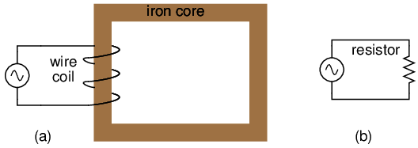
El devanado aislado en un bucle ferromagnético tiene reactancia inductiva, lo que limita la corriente alterna.
Como inductor, esperaríamos que esta bobina con núcleo de hierro se opusiera al voltaje aplicado con su reactancia inductiva, limitando la corriente a través de la bobina como lo predicen las ecuaciones XL= 2πfL y I=E/X (o I=E/Z). Sin embargo, para los propósitos de este ejemplo, necesitamos observar más detalladamente las interacciones del voltaje, la corriente y el flujo magnético en el dispositivo.
La ley de voltaje de Kirchhoff describe cómo la suma algebraica de todos los voltajes en un bucle debe ser igual a cero. En este ejemplo, podríamos aplicar esta ley fundamental de la electricidad para describir los voltajes respectivos de la fuente y de la bobina inductora. Aquí, como en cualquier circuito de una sola fuente y una sola carga, la caída de voltaje a través de la carga debe ser igual al voltaje suministrado por la fuente, suponiendo que la caída de voltaje sea cero a lo largo de la resistencia de los cables de conexión. En otras palabras, la carga (bobina inductora) debe producir un voltaje opuesto igual en magnitud al de la fuente, para que pueda equilibrarse con el voltaje de la fuente y producir una suma de voltaje de bucle algebraico de cero. ¿De dónde surge este voltaje opuesto? Si la carga fuera una resistencia (Figura above(b)), la caída de voltaje se origina por la pérdida de energía eléctrica, la “fricción” de los electrones que fluyen a través de la resistencia. Con un inductor perfecto (sin resistencia en el cable de la bobina), el voltaje opuesto proviene de otro mecanismo: elreaccióna un flujo magnético cambiante en el núcleo de hierro. Cuando la corriente alterna cambia, el flujo Φ cambia. El cambio de flujo induce un EMF contrario.
Michael Faraday descubrió la relación matemática entre el flujo magnético (Φ) y el voltaje inducido con esta ecuación:
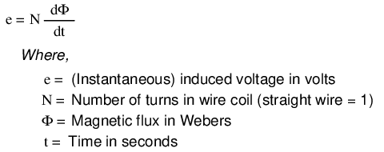
El voltaje instantáneo (voltaje caído en cualquier instante) a través de una bobina de alambre es igual al número de vueltas de esa bobina alrededor del núcleo (N) multiplicado por la tasa de cambio instantánea en el flujo magnético (dΦ/dt) que se une a la bobina. Graficado, (Figura below) esto se muestra como un conjunto de ondas sinusoidales (suponiendo una fuente de voltaje sinusoidal), la onda de flujo 90orezagado respecto de la onda de voltaje:
{kind=link}
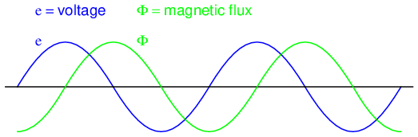
El flujo magnético retrasa el voltaje aplicado en 90oporque el flujo es proporcional a la tasa de cambio, dΦ/dt.
El flujo magnético a través de un material ferromagnético es análogo a la corriente a través de un conductor: debe estar motivado por alguna fuerza para que ocurra. En los circuitos eléctricos, esta fuerza motivadora es el voltaje (también conocida como fuerza electromotriz o FEM). En los “circuitos” magnéticos, esta fuerza motivadora esfuerza magnetomotriz, ommf. La fuerza magnetomotriz (mmf) y el flujo magnético (Φ) están relacionados entre sí por una propiedad de los materiales magnéticos conocida comoreluctancia(esta última cantidad simbolizada por una letra “R” de aspecto extraño):
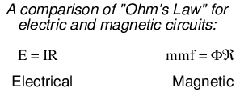
En nuestro ejemplo, la fmm requerida para producir este flujo magnético cambiante (Φ) debe ser suministrada por una corriente cambiante a través de la bobina. La fuerza magnetomotriz generada por una bobina de electroimán es igual a la cantidad de corriente que pasa por esa bobina (en amperios) multiplicada por el número de vueltas de esa bobina alrededor del núcleo (la unidad SI para mmf es laamplificador-giro). Debido a que la relación matemática entre el flujo magnético y la fmm es directamente proporcional, y debido a que la relación matemática entre la fmm y la corriente también es directamente proporcional (no hay tasas de cambio presentes en ninguna de las ecuaciones), la corriente a través de la bobina estará en fase con la onda de flujo como en (Figura below)
{kind=link}
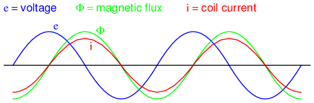
El flujo magnético, como la corriente, retrasa el voltaje aplicado en 90o.
Esta es la razón por la cual la corriente alterna a través de un inductor retrasa la forma de onda del voltaje aplicado en 90o: porque eso es lo que se requiere para producir un flujo magnético cambiante cuya tasa de cambio produce un voltaje opuesto en fase con el voltaje aplicado. Debido a su función de proporcionar fuerza magnetizante (mmf) para el núcleo, esta corriente a veces se denominacorriente magnetizante.
Cabe mencionar que la corriente a través de un inductor con núcleo de hierro no es perfectamente sinusoidal (forma de onda sinusoidal), debido a la curva de magnetización no lineal B/H del hierro. De hecho, si el inductor se construye de forma económica y utiliza la menor cantidad de hierro posible, la densidad del flujo magnético podría alcanzar niveles altos (cerca de la saturación), lo que resultaría en una forma de onda de corriente magnetizante similar a la de la Figura below
{kind=link}
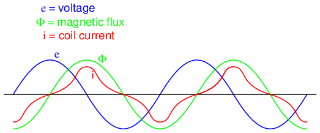
A medida que la densidad de flujo se acerca a la saturación, la forma de onda de la corriente magnetizante se distorsiona.
Cuando un material ferromagnético se acerca a la saturación del flujo magnético, se requieren niveles desproporcionadamente mayores de fuerza del campo magnético (mmf) para generar aumentos iguales en el flujo del campo magnético (Φ). Debido a que la mmf es proporcional a la corriente a través de la bobina magnetizante (mmf = NI, donde “N” es el número de vueltas de alambre en la bobina e “I” es la corriente que pasa a través de ella), los grandes aumentos de mmf requeridos para suministrar los aumentos necesarios en el flujo resultan en grandes aumentos en la corriente de la bobina. Por lo tanto, la corriente de la bobina aumenta dramáticamente en los picos para mantener una forma de onda de flujo que no esté distorsionada, lo que explica los semiciclos en forma de campana de la forma de onda actual en el gráfico anterior.
La situación se complica aún más por las pérdidas de energía dentro del núcleo de hierro. Los efectos de la histéresis y las corrientes parásitas conspiran para distorsionar y complicar aún más la forma de onda de la corriente, haciéndola aún menos sinusoidal y alterando su fase para que tenga un retraso ligeramente inferior a 90°.odetrás de la forma de onda de voltaje aplicada. Esta corriente de bobina resultante de la suma total de todos los efectos magnéticos en el núcleo (magnetización dΦ/dt más pérdidas por histéresis, pérdidas por corrientes parásitas, etc.) se denomina corriente de bobina.corriente emocionante. La distorsión de la corriente de excitación de un inductor con núcleo de hierro se puede minimizar si se diseña y funciona con densidades de flujo muy bajas. En términos generales, esto requiere un núcleo con una gran sección transversal, lo que tiende a hacer que el inductor sea voluminoso y caro. Sin embargo, en aras de la simplicidad, asumiremos que nuestro núcleo de ejemplo está lejos de la saturación y libre de pérdidas, lo que da como resultado una corriente de excitación perfectamente sinusoidal.
Como ya hemos visto en el capítulo de inductores, tener una forma de onda actual de 90odesfasado con la forma de onda de voltaje crea una condición en la que el inductor absorbe y devuelve alternativamente la energía al circuito. Si el inductor es perfecto (sin resistencia del cable, sin pérdidas en el núcleo magnético, etc.), disipará energía cero.
Consideremos ahora el mismo dispositivo inductor, excepto que esta vez con una segunda bobina (Figura below) envuelto alrededor del mismo núcleo de hierro. La primera bobina será etiquetada comoprimariobobina, mientras que la segunda será etiquetada comosecundario:
{kind=link}
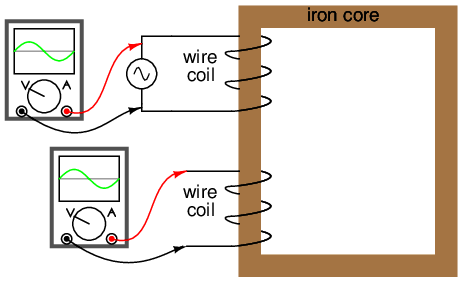
Núcleo ferromagnético con bobina primaria (accionada por CA) y bobina secundaria.
Si esta bobina secundaria experimenta el mismo cambio de flujo magnético que la primaria (lo que debería ocurrir, suponiendo una contención perfecta del flujo magnético a través del núcleo común), y tiene el mismo número de vueltas alrededor del núcleo, se inducirá a lo largo de su longitud un voltaje de igual magnitud y fase que el voltaje aplicado. En el siguiente gráfico, (Figura below) la forma de onda del voltaje inducido se dibuja ligeramente más pequeña que la forma de onda del voltaje de la fuente simplemente para distinguir una de la otra:
{kind=link}
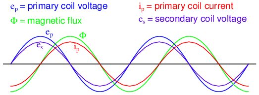
El secundario en circuito abierto ve el mismo flujo Φ que el primario. Por lo tanto, voltaje secundario inducido eses de la misma magnitud y fase que el voltaje primario ep.
Este efecto se llamainductancia mutua: la inducción de un voltaje en una bobina en respuesta a un cambio de corriente en la otra bobina. Al igual que la (auto)inductancia normal, se mide en la unidad de Henrys, pero a diferencia de la inductancia normal, está simbolizada por la letra mayúscula "M" en lugar de la letra "L":
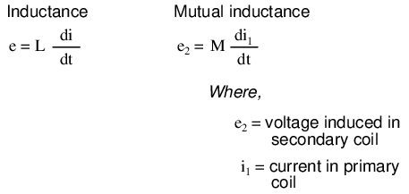
No existirá corriente en la bobina secundaria, ya que está en circuito abierto. Sin embargo, si le conectamos una resistencia de carga, una corriente alterna pasará a través de la bobina, en fase con el voltaje inducido (porque el voltaje a través de una resistencia y la corriente a través de ella sonsiempreen fase entre sí). (Cifra below)
{kind=link}
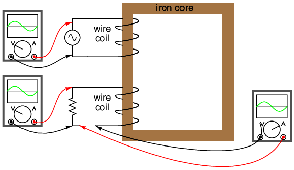
La carga resistiva en el secundario tiene voltaje y corriente en fase.
Al principio, se podría esperar que esta corriente de la bobina secundaria provoque un flujo magnético adicional en el núcleo. De hecho, no es así. Si se indujera más flujo en el núcleo, se induciría más voltaje en la bobina primaria (recuerde que e = dΦ/dt). Esto no puede suceder porque el voltaje inducido de la bobina primaria debe permanecer en la misma magnitud y fase para equilibrarse con el voltaje aplicado, de acuerdo con la ley de voltaje de Kirchhoff. En consecuencia, el flujo magnético en el núcleo no puede verse afectado por la corriente de la bobina secundaria. Sin embargo, ¿quéhaceEl cambio es la cantidad de mmf en el circuito magnético.
La fuerza magnetomotriz se produce cada vez que los electrones se mueven a través de un cable. Normalmente, esta fmm va acompañada de un flujo magnético, de acuerdo con la ecuación mmf=ΦR “Ley de Ohm magnético”. Sin embargo, en este caso, no se permite flujo adicional, por lo que la única forma en que puede existir la mmf de la bobina secundaria es si la bobina primaria genera una mmf contraria, de igual magnitud y fase opuesta. De hecho, esto es lo que sucede: se forma una corriente alterna en la bobina primaria: 180odesfasado con la corriente de la bobina secundaria, para generar esta mmf que contrarresta y evitar un flujo adicional en el núcleo. Se agregaron marcas de polaridad y flechas de dirección de corriente a la ilustración para aclarar las relaciones de fase: (Figura below)
{kind=link}
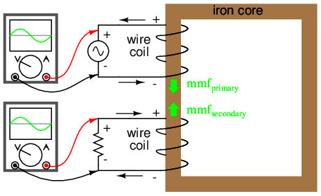
El flujo permanece constante con la aplicación de una carga. Sin embargo, el secundario cargado produce una fmm que lo contrarresta.
Si encuentra este proceso un poco confuso, no se preocupe. La dinámica de transformadores es un tema complejo. Lo que es importante entender es esto: cuando se aplica un voltaje de CA a la bobina primaria, se crea un flujo magnético en el núcleo, que induce voltaje de CA en la bobina secundaria en fase con el voltaje de la fuente. Cualquier corriente consumida a través de la bobina secundaria para alimentar una carga induce una corriente correspondiente en la bobina primaria, extrayendo corriente de la fuente.
Observe cómo la bobina primaria se comporta como una carga con respecto a la fuente de voltaje de CA y cómo la bobina secundaria se comporta como una fuente con respecto a la resistencia. En lugar de que la energía simplemente sea absorbida y devuelta alternativamente al circuito de la bobina primaria, ahora se estáacopladoa la bobina secundaria donde se entrega a una carga disipativa (que consume energía). Hasta donde la fuente “sabe”, está alimentando directamente la resistencia. Por supuesto, también hay una corriente de bobina primaria adicional retrasada del voltaje aplicado en 90o, lo suficiente para magnetizar el núcleo y crear el voltaje necesario para equilibrarlo con la fuente (lacorriente emocionante).
A este tipo de dispositivo lo llamamostransformador, porque transforma la energía eléctrica en energía magnética y luego nuevamente en energía eléctrica. Debido a que su funcionamiento depende de la inducción electromagnética entre dos bobinas estacionarias y de un flujo magnético de magnitud y “polaridad” cambiantes, los transformadores son necesariamente dispositivos de CA. Su símbolo esquemático parece dos inductores (bobinas) que comparten el mismo núcleo magnético: (Figura below)
{kind=link}
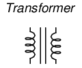
El símbolo esquemático del transformador consta de dos símbolos de inductor, separados por líneas que indican un núcleo ferromagnético.
Las dos bobinas inductoras se distinguen fácilmente en el símbolo anterior. El par de líneas verticales representan un núcleo de hierro común a ambos inductores. Si bien muchos transformadores tienen materiales centrales ferromagnéticos, hay algunos que no los tienen, ya que sus inductores constituyentes están unidos magnéticamente entre sí a través del aire.
La siguiente fotografía muestra un transformador de potencia del tipo utilizado en iluminación de descarga de gas. Aquí se pueden ver claramente las dos bobinas inductoras enrolladas alrededor de un núcleo de hierro. Si bien la mayoría de los diseños de transformadores encierran las bobinas y el núcleo en un marco metálico para su protección, este transformador en particular está abierto a la vista y, por lo tanto, cumple bien su propósito ilustrativo: (Figura below)
{kind=link}
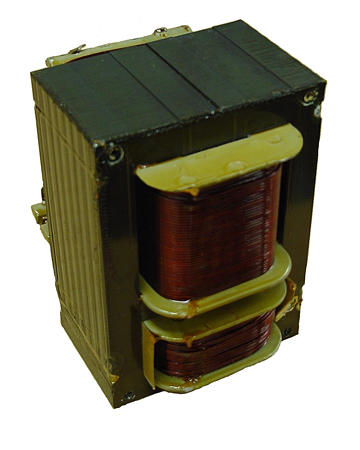
Ejemplo de transformador de iluminación por descarga de gas.
Aquí se pueden ver ambas bobinas de alambre con aislamiento de barniz de color cobre. La bobina superior es más grande que la inferior y tiene un mayor número de “vueltas” alrededor del núcleo. En los transformadores, las bobinas inductoras a menudo se denominandevanados, en referencia al proceso de fabricación donde se elabora el alambre.heridaalrededor del material del núcleo. Como se modeló en nuestro ejemplo inicial, el inductor energizado de un transformador se llamaprimariodevanado, mientras que la bobina sin alimentación se llamasecundariodevanado.
En la siguiente fotografía, Figura belowEn la figura, se muestra un transformador cortado por la mitad, dejando al descubierto la sección transversal del núcleo de hierro, así como ambos devanados. Al igual que el transformador mostrado anteriormente, esta unidad también utiliza devanados primarios y secundarios de diferentes recuentos de vueltas. También se puede observar que el calibre del cable difiere entre los devanados primarios y secundarios. La razón de esta disparidad en el calibre de los cables se aclarará en la siguiente sección de este capítulo. Además, en esta fotografía se puede ver que el núcleo de hierro está hecho de muchas láminas delgadas (laminaciones) en lugar de una pieza sólida. La razón de esto también se explicará en una sección posterior de este capítulo.
{kind=link}
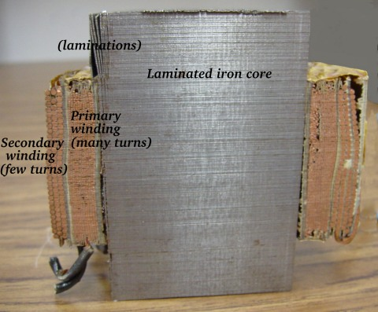
El corte de la sección transversal del transformador muestra el núcleo y los devanados.
Es fácil demostrar la acción simple de un transformador usando SPICE, configurando los devanados primario y secundario del transformador simulado como un par de inductores "mutuos". (Cifra below) El coeficiente de acoplamiento del campo magnético se da al final del “k" en la descripción del circuito SPICE, este ejemplo se establece casi en la perfección (1.000). Este coeficiente describe cuán estrechamente "unidos" están los dos inductores, magnéticamente. Cuanto mejor estén acoplados magnéticamente estos dos inductores, más eficiente debería ser la transferencia de energía entre ellos.
{kind=link}
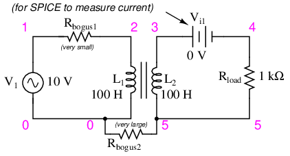
Circuito de especias para inductores acoplados.
transformer v1 1 0 ac 10 sin rbogus1 1 2 1e-12 rbogus2 5 0 9e12 l1 2 0 100 l2 3 5 100 ** This line tells SPICE that the two inductors ** l1 and l2 are magnetically “linked” together k l1 l2 0.999 vi1 3 4 ac 0 rload 4 5 1k .ac lin 1 60 60 .print ac v(2,0) i(v1) .print ac v(3,5) i(vi1) .end
Nota: la RfalsoSe requieren resistencias para satisfacer ciertas peculiaridades de SPICE. El primero rompe el bucle continuo entre la fuente de voltaje y L1lo cual no estaría permitido por SPICE. El segundo proporciona un camino a tierra (nodo 0) desde el circuito secundario, necesario porque SPICE no puede funcionar con ningún circuito sin conexión a tierra.
freq v(2) i(v1) 6.000E+01 1.000E+01 9.975E-03 Primary winding freq v(3,5) i(vi1) 6.000E+01 9.962E+00 9.962E-03 Secondary winding
Tenga en cuenta que con inductancias iguales para ambos devanados (100 Henrys cada uno), los voltajes y corrientes de CA son casi iguales para los dos. La diferencia entre corrientes primarias y secundarias es la corriente magnetizante de la que hablamos anteriormente: el 90ocorriente de retraso necesaria para magnetizar el núcleo. Como se ve aquí, suele ser muy pequeña en comparación con la corriente primaria inducida por la carga, por lo que las corrientes primaria y secundaria son casi iguales. Lo que está viendo aquí es bastante típico de la eficiencia de un transformador. Cualquier eficiencia inferior al 95 % se considera deficiente para los diseños de transformadores de potencia modernos, y esta transferencia de potencia se produce sin piezas móviles ni otros componentes sujetos a desgaste.
Si disminuimos la resistencia de carga para consumir más corriente con la misma cantidad de voltaje, vemos que la corriente a través del devanado primario aumenta en respuesta. Aunque la fuente de alimentación de CA no está conectada directamente a la resistencia de la carga (más bien, está “acoplada” electromagnéticamente), la cantidad de corriente extraída de la fuente será casi la misma que la cantidad de corriente que se consumiría si la carga estuviera conectada directamente a la fuente. Observe de cerca las siguientes dos simulaciones de SPICE, que muestran lo que sucede con diferentes valores de resistencias de carga:
transformer v1 1 0 ac 10 sin rbogus1 1 2 1e-12 rbogus2 5 0 9e12 l1 2 0 100 l2 3 5 100 k l1 l2 0.999 vi1 3 4 ac 0 ** Note load resistance value of 200 ohms rload 4 5 200 .ac lin 1 60 60 .print ac v(2,0) i(v1) .print ac v(3,5) i(vi1) .end
freq v(2) i(v1) 6.000E+01 1.000E+01 4.679E-02 freq v(3,5) i(vi1) 6.000E+01 9.348E+00 4.674E-02
Observe cómo la corriente primaria sigue de cerca a la corriente secundaria. En nuestra primera simulación, ambas corrientes eran de aproximadamente 10 mA, pero ahora ambas rondan los 47 mA. En esta segunda simulación, las dos corrientes están más cerca de la igualdad, porque la corriente de magnetización sigue siendo la misma que antes mientras que la corriente de carga ha aumentado. Observe también cómo el voltaje secundario ha disminuido un poco con la carga más pesada (mayor corriente). Probemos otra simulación con un valor aún menor de resistencia de carga (15 Ω):
transformer v1 1 0 ac 10 sin rbogus1 1 2 1e-12 rbogus2 5 0 9e12 l1 2 0 100 l2 3 5 100 k l1 l2 0.999 vi1 3 4 ac 0 rload 4 5 15 .ac lin 1 60 60 .print ac v(2,0) i(v1) .print ac v(3,5) i(vi1) .end
freq v(2) i(v1) 6.000E+01 1.000E+01 1.301E-01 freq v(3,5) i(vi1) 6.000E+01 1.950E+00 1.300E-01
Nuestra corriente de carga es ahora de 0,13 amperios o 130 mA, que es sustancialmente más alta que la última vez. La corriente primaria está muy cerca de ser la misma, pero observe cómo el voltaje secundario ha caído muy por debajo del voltaje primario (1,95 voltios frente a 10 voltios en el primario). La razón de esto es una imperfección en el diseño de nuestro transformador: porque las inductancias primaria y secundaria no sonperfectamentevinculado (unkfactor de 0,999 en lugar de 1,000) hay "perdidos" o "fuga"Inductancia. En otras palabras, parte del campo magnético no está vinculado con la bobina secundaria y, por lo tanto, no puede acoplarle energía: (Figura below)
{kind=link}
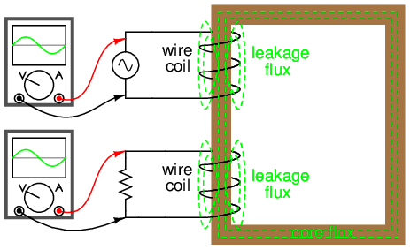
La inductancia de fuga se debe a que el flujo magnético no corta ambos devanados.
En consecuencia, este flujo de “fuga” simplemente almacena y devuelve energía al circuito fuente mediante autoinductancia, actuando efectivamente como una impedancia en serie tanto en el circuito primario como en el secundario. El voltaje cae a través de esta impedancia en serie, lo que resulta en un voltaje de carga reducido: el voltaje a través de la carga "hunde" a medida que aumenta la corriente de carga. (Cifra below)
{kind=link}
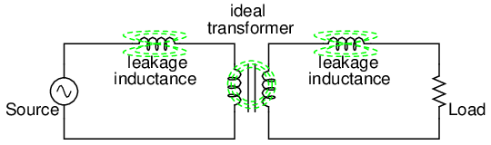
El circuito equivalente modela la inductancia de fuga como inductores en serie independientes del "transformador ideal".
Si cambiamos el diseño del transformador para tener un mejor acoplamiento magnético entre las bobinas primaria y secundaria, las cifras de voltaje entre los devanados primario y secundario volverán a estar mucho más cerca de la igualdad:
transformer v1 1 0 ac 10 sin rbogus1 1 2 1e-12 rbogus2 5 0 9e12 l1 2 0 100 l2 3 5 100 ** Coupling factor = 0.99999 instead of 0.999 k l1 l2 0.99999 vi1 3 4 ac 0 rload 4 5 15 .ac lin 1 60 60 .print ac v(2,0) i(v1) .print ac v(3,5) i(vi1) .end
freq v(2) i(v1) 6.000E+01 1.000E+01 6.658E-01 freq v(3,5) i(vi1) 6.000E+01 9.987E+00 6.658E-01
Aquí vemos que nuestro voltaje secundario vuelve a ser igual al primario, y la corriente secundaria también es igual a la corriente primaria. Desafortunadamente, construir un transformador real con un acoplamiento tan completo es muy difícil. Una solución de compromiso es diseñar bobinas primarias y secundarias con menos inductancia, siendo la estrategia que una menor inductancia general conduzca a menos inductancia de “fuga” que cause problemas, para cualquier grado dado de ineficiencia del acoplamiento magnético. Esto da como resultado un voltaje de carga que está más cerca del ideal con la misma carga (alta corriente pesada) y el mismo factor de acoplamiento:
transformer v1 1 0 ac 10 sin rbogus1 1 2 1e-12 rbogus2 5 0 9e12 ** inductance = 1 henry instead of 100 henrys l1 2 0 1 l2 3 5 1 k l1 l2 0.999 vi1 3 4 ac 0 rload 4 5 15 .ac lin 1 60 60 .print ac v(2,0) i(v1) .print ac v(3,5) i(vi1) .end
freq v(2) i(v1) 6.000E+01 1.000E+01 6.664E-01 freq v(3,5) i(vi1) 6.000E+01 9.977E+00 6.652E-01
Simplemente usando bobinas primarias y secundarias de menor inductancia, el voltaje de carga para esta carga pesada (alta corriente) ha vuelto a niveles casi ideales (9,977 voltios). En este punto, uno podría preguntarse: "Si todo lo que se necesita para lograr un rendimiento casi ideal bajo cargas pesadas es menos inductancia, entonces ¿por qué preocuparse por la eficiencia del acoplamiento? Si es imposible construir un transformador con un acoplamiento perfecto, pero fácil de diseñar bobinas con baja inductancia, entonces ¿por qué no construir todos los transformadores con bobinas de baja inductancia y tener una eficiencia excelente incluso con un acoplamiento magnético deficiente?"
La respuesta a esta pregunta se encuentra en otra simulación: el mismo transformador de baja inductancia, pero esta vez con una carga más ligera (menos corriente) de 1 kΩ en lugar de 15 Ω:
transformer v1 1 0 ac 10 sin rbogus1 1 2 1e-12 rbogus2 5 0 9e12 l1 2 0 1 l2 3 5 1 k l1 l2 0.999 vi1 3 4 ac 0 rload 4 5 1k .ac lin 1 60 60 .print ac v(2,0) i(v1) .print ac v(3,5) i(vi1) .end
freq v(2) i(v1) 6.000E+01 1.000E+01 2.835E-02 freq v(3,5) i(vi1) 6.000E+01 9.990E+00 9.990E-03
Con inductancias de devanado más bajas, los voltajes primario y secundario están más cerca de ser iguales, pero las corrientes primaria y secundaria no lo son. En este caso particular, la corriente primaria es de 28,35 mA mientras que la corriente secundaria es de sólo 9,990 mA: casi tres veces más corriente en el primario que en el secundario. ¿Por qué es esto? Con menos inductancia en el devanado primario, hay menos reactancia inductiva y, en consecuencia, una corriente magnetizante mucho mayor. Una cantidad sustancial de la corriente a través del devanado primario simplemente funciona para magnetizar el núcleo en lugar detransferirenergía útil al devanado secundario y a la carga.
Un transformador ideal con devanados primarios y secundarios idénticos manifestaría voltaje y corriente iguales en ambos conjuntos de devanados para cualquier condición de carga. En un mundo perfecto, los transformadores transferirían energía eléctrica del primario al secundario tan suavemente como si la carga estuviera directamente conectada a la fuente de energía primaria, sin ningún transformador allí. Sin embargo, puedes ver que este objetivo ideal sólo se puede alcanzar si hayperfectoAcoplamiento del flujo magnético entre los devanados primario y secundario. Dado que esto es imposible de lograr, los transformadores deben diseñarse para operar dentro de ciertos rangos esperados de voltajes y cargas para que funcionen lo más cerca posible del ideal. Por ahora, lo más importante a tener en cuenta es el principio operativo básico de un transformador: la transferencia de energía del circuito primario al secundario mediante acoplamiento electromagnético.
- REVISAR:
- Inductancia mutuaEs donde el flujo magnético de dos o más inductores está "vinculado" de modo que se induce voltaje en una bobina proporcional a la tasa de cambio de corriente en otra.
- A transformadorEs un dispositivo hecho de dos o más inductores, uno de los cuales se alimenta con CA, induciendo un voltaje de CA a través del segundo inductor. Si el segundo inductor está conectado a una carga, la energía se acoplará electromagnéticamente desde la fuente de energía del primer inductor a esa carga.
- El inductor alimentado en un transformador se llamadevanado primario. El inductor no alimentado en un transformador se llamadevanado secundario.
- El flujo magnético en el núcleo (Φ) se retrasa 90odetrás de la forma de onda del voltaje de la fuente. La corriente extraída por la bobina primaria de la fuente para producir este flujo se llamacorriente magnetizante, y también retrasa el voltaje de suministro en 90o.
- La corriente primaria total en un transformador descargado se llamacorriente emocionante, y se compone de corriente magnetizante más cualquier corriente adicional necesaria para superar las pérdidas del núcleo. Nunca es perfectamente sinusoidal en un transformador real, pero puede llegar a serlo aún más si el transformador está diseñado y operado de manera que la densidad del flujo magnético se mantenga al mínimo.
- El flujo del núcleo induce un voltaje en cualquier bobina enrollada alrededor del núcleo. Lo ideal es que los voltajes inducidos estén en fase con el voltaje de la fuente del devanado primario y compartan la misma forma de onda.
- Cualquier corriente consumida a través del devanado secundario por una carga será "reflejada" hacia el devanado primario y extraída de la fuente de voltaje, como si la fuente estuviera alimentando directamente una carga similar.
Transformadores elevadores y reductores
Hasta ahora, hemos observado simulaciones de transformadores donde los devanados primario y secundario tenían inductancia idéntica, dando niveles de voltaje y corriente aproximadamente iguales en ambos circuitos. Sin embargo, la igualdad de voltaje y corriente entre los lados primario y secundario de un transformador no es la norma para todos los transformadores. Si las inductancias de los dos devanados no son iguales sucede algo interesante:
transformer v1 1 0 ac 10 sin rbogus1 1 2 1e-12 rbogus2 5 0 9e12 l1 2 0 10000 l2 3 5 100 k l1 l2 0.999 vi1 3 4 ac 0 rload 4 5 1k .ac lin 1 60 60 .print ac v(2,0) i(v1) .print ac v(3,5) i(vi1) .end
freq v(2) i(v1) 6.000E+01 1.000E+01 9.975E-05 Primary winding freq v(3,5) i(vi1) 6.000E+01 9.962E-01 9.962E-04 Secondary winding
Observe cómo el voltaje secundario es aproximadamente diez veces menor que el voltaje primario (0,9962 voltios en comparación con 10 voltios), mientras que la corriente secundaria es aproximadamente diez veces mayor (0,9962 mA en comparación con 0,09975 mA). Lo que tenemos aquí es un dispositivo que aumenta el voltaje.abajopor un factor de diez y actualuppor un factor de diez: (Figura below)
{kind=link}
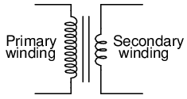
La relación de vueltas de 10:1 produce una relación de voltaje primario:secundario de 10:1 y una relación de corriente primaria:secundaria de 1:10.
Este es un dispositivo muy útil, por cierto. Con él podemos multiplicar o dividir fácilmente el voltaje y la corriente en circuitos de CA. De hecho, el transformador ha hecho que la transmisión de energía eléctrica a larga distancia sea una realidad práctica, ya que se puede “aumentar” el voltaje de CA y “reducir” la corriente para reducir las pérdidas de energía por resistencia de los cables a lo largo de las líneas eléctricas que conectan las estaciones generadoras con las cargas. En ambos extremos (tanto en el generador como en las cargas), los transformadores reducen los niveles de voltaje para una operación más segura y equipos menos costosos. Un transformador que aumenta el voltaje del primario al secundario (más vueltas del devanado secundario que del primario) se llamaintensificartransformador. Por el contrario, un transformador diseñado para hacer justo lo contrario se llama transformador.bajartransformador.
Volvamos a examinar una fotografía que se muestra en la sección anterior: (Figura below)
{kind=link}
La sección transversal del transformador que muestra los devanados primario y secundario tiene unas pocas pulgadas de alto (aproximadamente 10 cm).
Este es un transformador reductor, como lo demuestra el alto número de vueltas del devanado primario y el bajo número de vueltas del secundario. Como unidad reductora, este transformador convierte energía de alto voltaje y baja corriente en energía de bajo voltaje y alta corriente. El cable de mayor calibre utilizado en el devanado secundario es necesario debido al aumento de corriente. El devanado primario, que no tiene que conducir tanta corriente, puede estar hecho de un cable de menor calibre.
En caso de que te lo preguntes,isEs posible operar cualquiera de estos tipos de transformadores al revés (alimentando el devanado secundario con una fuente de CA y dejando que el devanado primario alimente una carga) para realizar la función opuesta: un elevador puede funcionar como un reductor y viceversa. Sin embargo, como vimos en la primera sección de este capítulo, el funcionamiento eficiente de un transformador requiere que las inductancias de los devanados individuales estén diseñadas para rangos operativos específicos de voltaje y corriente, por lo que si se va a utilizar un transformador "al revés" como este, debe emplearse dentro de los parámetros de diseño originales de voltaje y corriente para cada devanado, para que no resulte ineficiente (o que sea ineficiente).dañadopor voltaje o corriente excesivos!).
Los transformadores a menudo se construyen de tal manera que no es obvio qué cables conducen al devanado primario y cuáles al secundario. Una convención utilizada en la industria de la energía eléctrica para ayudar a aliviar la confusión es el uso de designaciones "H" para el devanado de mayor voltaje (el devanado primario en una unidad reductora; el devanado secundario en una elevadora) y designaciones "X" para el devanado de menor voltaje. Por lo tanto, un transformador de potencia simple tendrá cables etiquetados como "H1”, “H2”, “X1”, y “X2". Por lo general, la numeración de los cables tiene importancia (H1versus H2, etc.), que exploraremos un poco más adelante en este capítulo.
El hecho de que el voltaje y la corriente se “escalen” en direcciones opuestas (uno hacia arriba y el otro hacia abajo) tiene mucho sentido cuando se recuerda que la potencia es igual al voltaje multiplicado por la corriente y se da cuenta de que los transformadores no puedenproducirpotencia, sólo conviértala. Cualquier dispositivo que pudiera generar más energía de la que consumiera violaría elLey de Conservación de Energíaen física, es decir, que la energía no se puede crear ni destruir, sólo convertir. Al igual que con el primer ejemplo de transformador que vimos, la eficiencia de transferencia de energía es muy buena desde el lado primario al secundario del dispositivo.
La importancia práctica de esto se hace más evidente cuando se considera una alternativa: antes de la llegada de los transformadores eficientes, la conversión del nivel de tensión/corriente sólo podía lograrse mediante el uso de conjuntos de motor/generador. Un dibujo de un conjunto de motor/generador revela el principio básico involucrado: (Figura below)
{kind=link}
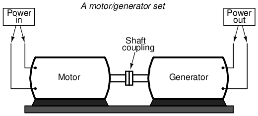
El motor generador ilustra el principio básico del transformador.
En una máquina de este tipo, un motor está acoplado mecánicamente a un generador, estando diseñado el generador para producir los niveles deseados de voltaje y corriente a la velocidad de rotación del motor. Si bien tanto los motores como los generadores son dispositivos bastante eficientes, el uso de ambos de esta manera agrava sus ineficiencias de modo que la eficiencia general está en el rango del 90% o menos. Además, debido a que los conjuntos de motor/generador obviamente requieren piezas móviles, el desgaste mecánico y el equilibrio son factores que influyen tanto en la vida útil como en el rendimiento. Los transformadores, por otro lado, pueden convertir niveles de voltaje y corriente CA con eficiencias muy altas sin partes móviles, lo que hace posible la distribución y el uso generalizados de la energía eléctrica que damos por sentado.
Para ser justos, cabe señalar que los conjuntos de motor/generador no necesariamente han quedado obsoletos por los transformadores paraallaplicaciones. Si bien los transformadores son claramente superiores a los conjuntos de motor/generador para la conversión de voltaje CA y nivel de corriente, no pueden convertir una frecuencia de energía CA a otra, o (por sí mismos) convertir CC a CA o viceversa. Los conjuntos de motor/generador pueden hacer todas estas cosas con relativa simplicidad, aunque con las limitaciones de eficiencia y factores mecánicos ya descritos. Los conjuntos de motor/generador también tienen la propiedad única de almacenar energía cinética: es decir, si el suministro de energía del motor se interrumpe momentáneamente por cualquier motivo, su momento angular (la inercia de esa masa giratoria) mantendrá la rotación del generador por un corto período de tiempo, aislando así cualquier carga alimentada por el generador de "fallos" en el sistema de energía principal.
Si observamos de cerca los números en el análisis SPICE, deberíamos ver una correspondencia entre la relación del transformador y las dos inductancias. Observe cómo el inductor primario (l1) tiene 100 veces más inductancia que el inductor secundario (10000 H versus 100 H), y que la relación de reducción de voltaje medida fue de 10 a 1. El devanado con más inductancia tendrá un voltaje más alto y menos corriente que el otro. Dado que los dos inductores están enrollados alrededor del mismo material de núcleo en el transformador (para lograr el acoplamiento magnético más eficiente entre los dos), los parámetros que afectan la inductancia de las dos bobinas son iguales excepto el número de vueltas en cada bobina. Si echamos otro vistazo a nuestra fórmula de inductancia, vemos que la inductancia es proporcional a lacuadradodel número de vueltas de la bobina:
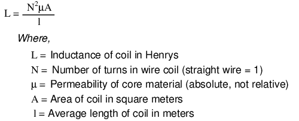
Entonces, debería ser evidente que nuestros dos inductores en el último circuito de ejemplo del transformador SPICE, con relaciones de inductancia de 100:1, deberían tener relaciones de vuelta de bobina de 10:1, porque 10 al cuadrado es igual a 100. Esta resulta ser la misma relación que encontramos entre voltajes y corrientes primarios y secundarios (10:1), por lo que podemos decir como regla que la relación de transformación de voltaje y corriente es igual a la relación de vueltas de devanado entre primario y secundario.
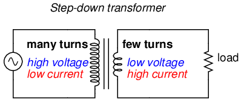
Transformador reductor: (muchas vueltas :pocas vueltas).
El efecto de aumento/reducción de las relaciones de vuelta de la bobina en un transformador (Figura above) es análogo a las relaciones de dientes de engranajes en sistemas de engranajes mecánicos, transformando valores de velocidad y torque de la misma manera: (Figura below)
{kind=link}
{kind=link}
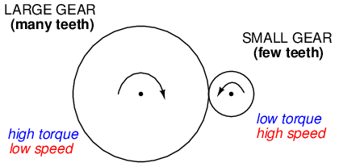
El tren de engranajes que reduce el par reduce el par y aumenta la velocidad.
Los transformadores elevadores y reductores para distribución de energía pueden ser gigantescos en proporción a los transformadores de potencia mostrados anteriormente, algunas unidades alcanzan la altura de una casa. La siguiente fotografía muestra un transformador de subestación de unos doce pies de altura: (Figura below)
{kind=link}
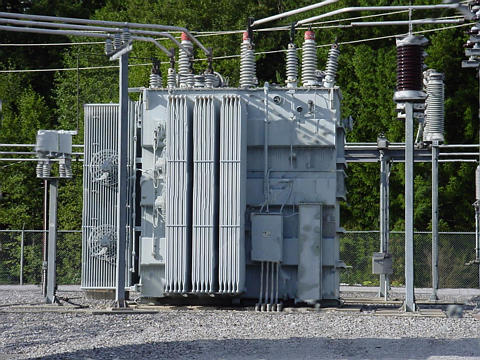
Transformador de subestación.
- REVISAR:
- Los transformadores “aumentan” o “reducen” el voltaje de acuerdo con las relaciones de vueltas de los cables primario y secundario.
-
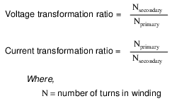
- Un transformador diseñado para aumentar el voltaje del primario al secundario se llamaintensificartransformador. Un transformador diseñado para reducir el voltaje del primario al secundario se llamabajartransformador.
- La relación de transformación de un transformador será igual a la raíz cuadrada de su relación de inductancia primaria a secundaria (L).
-
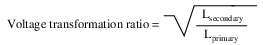
Aislamiento eléctrico
Además de la capacidad de convertir fácilmente entre diferentes niveles de voltaje y corriente en circuitos de CA y CC, los transformadores también brindan una característica extremadamente útil llamadaaislamiento, que es la capacidad de acoplar un circuito a otro sin el uso de conexiones de cables directas. Podemos demostrar una aplicación de este efecto con otra simulación de SPICE: esta vez mostrando conexiones de "tierra" para los dos circuitos, imponiendo un alto voltaje de CC entre un circuito y tierra mediante el uso de una fuente de voltaje adicional: (Figura below)
{kind=link}
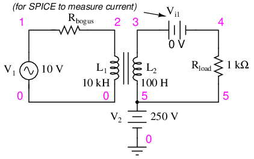
El transformador aísla 10 V.acen V1desde 250 voltiosDCen V2.
v1 1 0 ac 10 sin rbogus1 1 2 1e-12 v2 5 0 dc 250 l1 2 0 10000 l2 3 5 100 k l1 l2 0.999 vi1 3 4 ac 0 rload 4 5 1k .ac lin 1 60 60 .print ac v(2,0) i(v1) .print ac v(3,5) i(vi1) .end
DC voltages referenced to ground (node 0): (1) 0.0000 (2) 0.0000 (3) 250.0000 (4) 250.0000 (5) 250.0000 AC voltages: freq v(2) i(v1) 6.000E+01 1.000E+01 9.975E-05 Primary winding freq v(3,5) i(1) 6.000E+01 9.962E-01 9.962E-04 Secondary winding
SPICE muestra los 250 voltios CC impresos sobre los elementos del circuito secundario con respecto a tierra (Figura above) pero como puede ver, no hay ningún efecto en el circuito primario (voltaje CC cero) en los nodos 1 y 2, y la transformación de la energía CA de los circuitos primario a secundario sigue siendo la misma que antes. El voltaje impreso en este ejemplo a menudo se llamamodo comúnvoltaje porque se ve en más de un punto del circuito con referencia al punto común de tierra. El transformador aísla el voltaje de modo común de modo que no quede impreso en absoluto en el circuito primario, sino aislado en el lado secundario. Para que conste, tampoco importa que el voltaje de modo común sea CC. Podría ser CA, incluso a una frecuencia diferente, y el transformador lo aislaría del circuito primario de todos modos.
Hay aplicaciones en las que se necesita aislamiento eléctrico entre dos circuitos de CA sin ninguna transformación de los niveles de voltaje o corriente. En estos casos, los transformadores llamadostransformadores de aislamientoSe utilizan relaciones de transformación de 1:1. En la figura se muestra un transformador de aislamiento de mesa. below.
{kind=link}
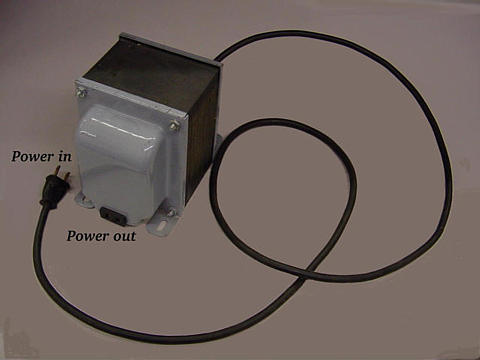
El transformador de aislamiento aísla la energía de la línea eléctrica.
- REVISAR:
- Al poder transferir energía de un circuito a otro sin el uso de conductores de interconexión entre los dos circuitos, los transformadores brindan la útil característica deaislamiento electrico.
- Los transformadores diseñados para proporcionar aislamiento eléctrico sin aumentar o disminuir el voltaje y la corriente se llamantransformadores de aislamiento.
Desfase y polaridad de devanados
Dado que los transformadores son esencialmente dispositivos de CA, debemos conocer las relaciones de fase entre los circuitos primario y secundario. Usando nuestro ejemplo de SPICE de antes, podemos trazar las formas de onda (Figura below) para los circuitos primario y secundario y veamos las relaciones de fase por nosotros mismos:
{kind=link}
spice transient analysis file for use with nutmeg: transformer v1 1 0 sin(0 15 60 0 0) rbogus1 1 2 1e-12 v2 5 0 dc 250 l1 2 0 10000 l2 3 5 100 k l1 l2 0.999 vi1 3 4 ac 0 rload 4 5 1k .tran 0.5m 17m .end nutmeg commands: setplot tran1 plot v(2) v(3,5)
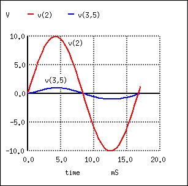
El voltaje secundario V(3,5) está en fase con el voltaje primario V(2) y se reduce en un factor de diez.
Al pasar del primario, V(2), al secundario, V(3,5), el voltaje se redujo en un factor de diez (Figura above) , y la corriente se incrementó en un factor de 10. (Figura below) Ambos actuales (Figura below) y voltaje (Figura above) las formas de onda están en fase al pasar de primaria a secundaria.
{kind=link}
nutmeg commands: setplot tran1 plot I(L1#branch) I(L2#branch)
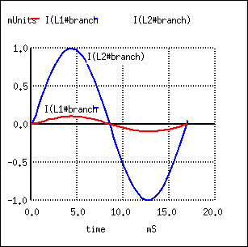
Las corrientes primaria y secundaria están en fase. La corriente secundaria se multiplica por diez.
Parecería que tanto el voltaje como la corriente de los dos devanados del transformador están en fase entre sí, al menos para nuestra carga resistiva. Esto es bastante simple, pero sería bueno saberlo.de que maneradebemos conectar un transformador para garantizar que se mantengan las relaciones de fase adecuadas. Después de todo, un transformador no es más que un conjunto de inductores unidos magnéticamente, y los inductores generalmente no vienen con marcas de polaridad de ningún tipo. Si miráramos un transformador sin marcar, no tendríamos forma de saber de qué manera conectarlo a un circuito para ponerlo en fase (o 180ofuera de fase) voltaje y corriente: (Figura below)
{kind=link}
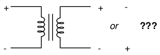
En la práctica, la polaridad de un transformador puede ser ambigua.
Dado que se trata de una preocupación práctica, los fabricantes de transformadores han creado una especie de estándar de marcado de polaridad para indicar las relaciones de fase. Se llama elconvención de puntos, y no es más que un punto colocado al lado de cada pata correspondiente de un devanado de transformador: (Figura below)
{kind=link}
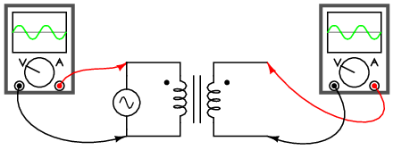
Un par de puntos indica la misma polaridad.
Por lo general, el transformador vendrá con algún tipo de diagrama esquemático que etiqueta los cables de los devanados primario y secundario. En el diagrama habrá un par de puntos similares a los que se ven arriba. A veces se omitirán los puntos, pero cuando se utilizan etiquetas “H” y “X” para etiquetar los cables del devanado del transformador, se supone que los números en subíndice representan la polaridad del devanado. Los cables “1” (H1y X1) representan dónde normalmente se colocarían los puntos que marcan la polaridad.
La ubicación similar de estos puntos junto a los extremos superiores de los devanados primario y secundario nos dice que cualquier polaridad de voltaje instantáneo vista a través del devanado primario será la misma que la del devanado secundario. En otras palabras, el cambio de fase de primaria a secundaria será de cero grados.
Por otro lado, si los puntos en cada devanado del transformador nonotcoinciden, el cambio de fase será 180oentre primaria y secundaria, así: (Figura below)
{kind=link}
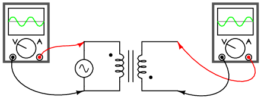
Fuera de fase: rojo primario a punto, negro secundario a punto.
Por supuesto, la convención de puntos sólo le indica qué extremo de cada devanado es cuál, en relación con los otros devanados. Si desea invertir la relación de fase usted mismo, todo lo que tiene que hacer es intercambiar las conexiones de los devanados de esta manera: (Figura below)
{kind=link}
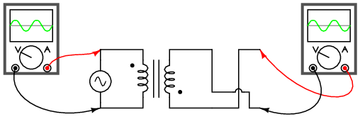
En fase: rojo primario a punto, rojo secundario a punto.
- REVISAR:
- Las relaciones de fase para voltaje y corriente entre los circuitos primario y secundario de un transformador son directas: idealmente, cambio de fase cero.
- The convención de puntoses un tipo de marca de polaridad para los devanados de transformadores que muestra qué extremo del devanado es cuál, en relación con los otros devanados.
Configuraciones de devanados
Los transformadores son dispositivos muy versátiles. El concepto básico de transferencia de energía entre inductores mutuos es bastante útil entre una única bobina primaria y una única bobina secundaria, pero no es necesario fabricar transformadores con solo dos juegos de devanados. Considere este circuito transformador: (Figura below)
{kind=link}
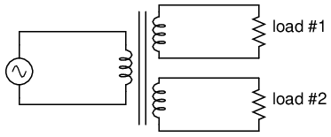
Transformador con múltiples secundarios, proporciona múltiples voltajes de salida.
Aquí, tres bobinas inductoras comparten un núcleo magnético común, “acoplándolas” o “uniéndolas” magnéticamente. La relación entre las relaciones de espiras del devanado y las relaciones de voltaje que se observan con un solo par de inductores mutuos sigue siendo válida aquí para múltiples pares de bobinas. Es completamente posible montar un transformador como el de arriba (un devanado primario, dos devanados secundarios) en el que un devanado secundario es reductor y el otro es elevador. De hecho, este diseño de transformador era bastante común en los circuitos de suministro de energía de tubos de vacío, que debían suministrar bajo voltaje para los filamentos de los tubos (típicamente 6 o 12 voltios) y alto voltaje para las placas de los tubos (varios cientos de voltios) a partir de un voltaje primario nominal de 110 voltios CA. Con un transformador de este tipo no sólo son posibles tensiones y corrientes de magnitudes completamente diferentes, sino que todos los circuitos están aislados galvánicamente entre sí.
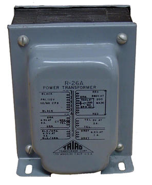
Fotografía de transformador de devanados múltiples con seis devanados, un primario y cinco secundarios.
El transformador en la figura. aboveestá destinado a proporcionar los voltajes altos y bajos necesarios en un sistema electrónico que utiliza tubos de vacío. Se requiere bajo voltaje para alimentar los filamentos de los tubos de vacío, mientras que se requiere alto voltaje para crear la diferencia de potencial entre los elementos de placa y cátodo de cada tubo. Un transformador con múltiples devanados es suficiente para proporcionar todos los niveles de tensión necesarios desde una única fuente de 115 V. Los cables de este transformador (¡15 de ellos!) no se muestran en la fotografía, ya que están ocultos a la vista.
{kind=link}
Si el aislamiento eléctrico entre circuitos secundarios no es de gran importancia, se puede obtener un efecto similar "tocando" un único devanado secundario en múltiples puntos a lo largo de su longitud, como en la Figura below.
{kind=link}
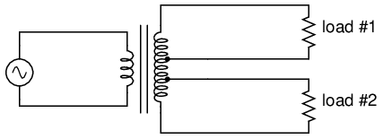
Un secundario con toma única proporciona múltiples voltajes.
Un grifo no es más que una conexión de cables realizada en algún punto de un devanado entre los extremos. No es sorprendente que la relación entre giro del devanado y magnitud de voltaje de un transformador normal sea válida para todos los segmentos de devanados con tomas. Este hecho se puede aprovechar para producir un transformador capaz de múltiples relaciones: (Figura below)
{kind=link}
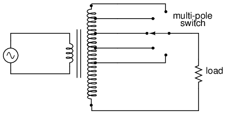
Un secundario intervenido que utiliza un interruptor para seleccionar uno de muchos voltajes posibles.
Llevando el concepto de derivaciones de bobinado más allá, terminamos con un "transformador variable", donde un contacto deslizante se mueve a lo largo de un devanado secundario expuesto, capaz de conectarse con él en cualquier punto a lo largo de su longitud. El efecto es equivalente a tener una derivación en cada vuelta del devanado y un interruptor con polos en cada posición de la derivación: (Figura below)
{kind=link}
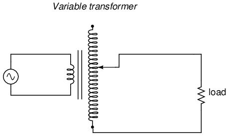
Un contacto deslizante en el secundario varía continuamente el voltaje secundario.
Una aplicación de consumo del transformador variable es el control de velocidad para conjuntos de trenes en miniatura, especialmente los conjuntos de trenes de las décadas de 1950 y 1960. Estos transformadores eran esencialmente unidades reductoras, siendo el voltaje más alto obtenible del devanado secundario sustancialmente menor que el voltaje primario de 110 a 120 voltios CA. El contacto de barrido variable proporcionó un medio simple de control de voltaje con poca energía desperdiciada, ¡mucho más eficiente que el control usando una resistencia variable!
Los contactos deslizantes móviles son demasiado poco prácticos para usarse en grandes diseños de transformadores de potencia industriales, pero los interruptores multipolares y las derivaciones de devanado son comunes para el ajuste de voltaje. Es necesario realizar ajustes periódicamente en los sistemas de energía para adaptarse a los cambios en las cargas a lo largo de meses o años, y estos circuitos de conmutación proporcionan un medio conveniente. Por lo general, estos "interruptores de grifo" no están diseñados para manejar corriente de carga completa, sino que deben accionarse sólo cuando el transformador ha sido desenergizado (sin energía).
Dado que podemos aprovechar cualquier devanado de un transformador para obtener el equivalente a varios devanados (aunque con pérdida de aislamiento eléctrico entre ellos), tiene sentido que sea posible prescindir del aislamiento eléctrico por completo y construir un transformador a partir de un solo devanado. De hecho, esto es posible y el dispositivo resultante se llamaautotransformador: (Cifra below)
{kind=link}
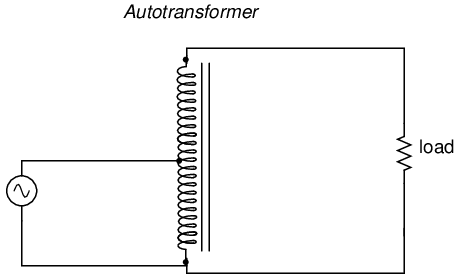
Este autotransformador aumenta el voltaje con un solo devanado, ahorra cobre y sacrifica el aislamiento.
El autotransformador que se muestra arriba realiza una función de aumento de voltaje. Un autotransformador reductor se parecería a la figura below.
{kind=link}
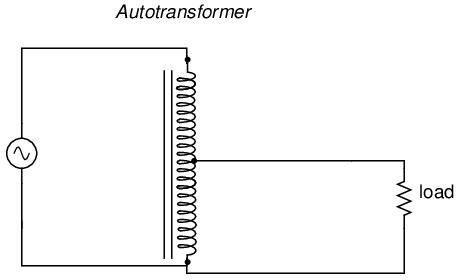
Este autotransformador reduce el voltaje con un único devanado con derivación que ahorra cobre.
Los autotransformadores encuentran un uso popular en aplicaciones que requieren un ligero aumento o reducción del voltaje de una carga. La alternativa con un transformador normal (aislado) sería tener la relación de devanado primario/secundario adecuada para el trabajo o usar una configuración reductora con el devanado secundario conectado en serie auxiliar (“impulsor”) o en serie opuesta (“contracorriente”). Se proporcionan los voltajes primario, secundario y de carga para ilustrar cómo funcionaría esto.
Primero, la configuración de "impulso". En la figura belowLa polaridad de la bobina secundaria está orientada de modo que su voltaje se suma directamente al voltaje primario.
{kind=link}
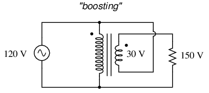
Transformador ordinario cableado como autotransformador para aumentar el voltaje de línea.
A continuación, la configuración de “bucking”. En la figura belowLa polaridad de la bobina secundaria está orientada de modo que su voltaje se resta directamente del voltaje primario:
{kind=link}
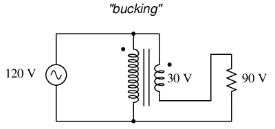
Transformador ordinario cableado como un autotransformador para reducir el voltaje de la línea.
La principal ventaja de un autotransformador es que se obtiene la misma función de refuerzo o reducción con un solo devanado, lo que lo hace más económico y liviano de fabricar que un transformador normal (de aislamiento) que tiene devanados primarios y secundarios.
Al igual que los transformadores normales, los devanados de los autotransformadores se pueden aprovechar para proporcionar variaciones en la relación. Además, se pueden hacer continuamente variables con un contacto deslizante para tocar el devanado en cualquier punto a lo largo de su longitud. Esta última configuración es lo suficientemente popular como para haberse ganado su propio nombre:variac. (Cifra below)
{kind=link}
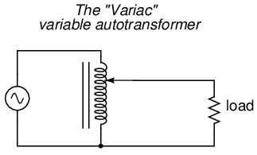
Un variac es un autotransformador con un grifo deslizante.
Los variacs pequeños para uso en mesa son equipos populares para el experimentador de electrónica, ya que pueden reducir (o a veces también aumentar) el voltaje de CA del hogar con un amplio y fino rango de control con solo girar una perilla.
- REVISAR:
- Los transformadores pueden equiparse con más de un par de devanados primario y secundario. Esto permite múltiples relaciones de aumento y/o reducción en el mismo dispositivo.
- Los devanados del transformador también se pueden “derivar”, es decir, intersecarlos en muchos puntos para segmentar un único devanado en secciones.
- Se pueden fabricar transformadores variables proporcionando un brazo móvil que se desplaza a lo largo de un devanado y hace contacto con el devanado en cualquier punto a lo largo de su longitud. El devanado, por supuesto, tiene que estar desnudo (sin aislamiento) en la zona por donde barre el brazo.
- Un autotransformador es una bobina inductora única con derivación que se utiliza para aumentar o reducir el voltaje como un transformador, excepto que no proporciona aislamiento eléctrico.
- A variaces un autotransformador variable.
Regulación de tensión
Como vimos en algunos análisis de SPICE anteriormente en este capítulo, el voltaje de salida de un transformador varía un poco con diferentes resistencias de carga, incluso con una entrada de voltaje constante. El grado de variación se ve afectado por las inductancias de los devanados primario y secundario, entre otros factores, entre los que se incluye la resistencia del devanado y el grado de inductancia mutua (acoplamiento magnético) entre los devanados primario y secundario. Para aplicaciones de transformadores de potencia, donde la carga ve el transformador (idealmente) como una fuente constante de voltaje, es bueno que el voltaje secundario varíe lo menos posible para variaciones amplias en la corriente de carga.
La medida de qué tan bien un transformador de potencia mantiene un voltaje secundario constante en un rango de corrientes de carga se llama magnitud del transformador.regulación de voltaje. Se puede calcular a partir de la siguiente fórmula:
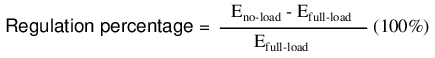
“Carga completa” significa el punto en el que el transformador está funcionando a la corriente secundaria máxima permitida. Este punto de operación estará determinado principalmente por el tamaño del cable del devanado (ampacidad) y el método de enfriamiento del transformador. Tomando como ejemplo nuestra primera simulación de transformador SPICE, comparemos el voltaje de salida con una carga de 1 kΩ versus una carga de 200 Ω (asumiendo que la carga de 200 Ω será nuestra condición de “carga completa”). Recuerde, si lo desea, que nuestro voltaje primario constante era de 10,00 voltios CA:
freq v(3,5) i(vi1) 6.000E+01 9.962E+00 9.962E-03 Output with 1k ohm load freq v(3,5) i(vi1) 6.000E+01 9.348E+00 4.674E-02 Output with 200 ohm load
Observe cómo el voltaje de salida disminuye a medida que la carga se vuelve más pesada (más corriente). Ahora tomemos ese mismo circuito de transformador y coloquemos una resistencia de carga de magnitud extremadamente alta a través del devanado secundario para simular una condición "sin carga": (Ver lista de especias para "transformadores")
transformer v1 1 0 ac 10 sin rbogus1 1 2 1e-12 rbogus2 5 0 9e12 l1 2 0 100 l2 3 5 100 k l1 l2 0.999 vi1 3 4 ac 0 rload 4 5 9e12 .ac lin 1 60 60 .print ac v(2,0) i(v1) .print ac v(3,5) i(vi1) .end
freq v(2) i(v1) 6.000E+01 1.000E+01 2.653E-04 freq v(3,5) i(vi1) 6.000E+01 9.990E+00 1.110E-12 Output with (almost) no load
Entonces, vemos que nuestro voltaje de salida (secundario) abarca un rango de 9,990 voltios (prácticamente) sin carga y 9,348 voltios en el punto que decidimos llamar "carga completa". Calculando la regulación de tensión con estas cifras obtenemos:
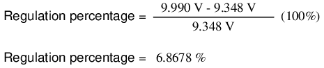
Por cierto, esto se consideraría una regulación bastante pobre (o “laxa”) para un transformador de potencia. Para alimentar una carga resistiva simple como esta, un buen transformador de potencia debería presentar un porcentaje de regulación inferior al 3%. Las cargas inductivas tienden a crear una condición de peor regulación de voltaje, por lo que este análisis con cargas puramente resistivas fue una condición del "mejor de los casos".
Sin embargo, hay algunas aplicaciones en las que en realidad se desea una regulación deficiente. Uno de esos casos es el de la iluminación de descarga, donde se requiere un transformador elevador para generar inicialmente un alto voltaje (necesario para "encender" las lámparas), luego se espera que el voltaje caiga una vez que la lámpara comience a consumir corriente. Esto se debe a que los requisitos de voltaje de las lámparas de descarga tienden a ser mucho menores después de que se ha establecido una corriente a través de la trayectoria del arco. En este caso, un transformador elevador con mala regulación de voltaje es suficiente para la tarea de acondicionar la energía de la lámpara.
Otra aplicación es el control de corriente para soldadores de arco de CA, que no son más que transformadores reductores que suministran energía de alta corriente y bajo voltaje para el proceso de soldadura. Se desea un alto voltaje para ayudar a "encender" el arco (para que comience), pero al igual que la lámpara de descarga, un arco no requiere tanto voltaje para mantenerse una vez que el aire se ha calentado hasta el punto de ionización. Por lo tanto, una disminución del voltaje secundario bajo una corriente de carga alta sería algo bueno. Algunos diseños de soldadoras de arco proporcionan ajuste de la corriente del arco por medio de un núcleo de hierro móvil en el transformador, que el operador mueve hacia adentro o hacia afuera del conjunto de devanado. Alejar el casquillo de hierro de los devanados reduce la fuerza del acoplamiento magnético entre los devanados, lo que disminuye el voltaje secundario sin carga.andhace que la regulación de voltaje sea peor.
Ninguna exposición sobre la regulación de transformadores podría considerarse completa sin mencionar un dispositivo inusual llamadotransformador ferroresonante. La “ferrorresonancia” es un fenómeno asociado con el comportamiento de los núcleos de hierro mientras funcionan cerca de un punto de saturación magnética (donde el núcleo está tan fuertemente magnetizado que mayores aumentos en la corriente del devanado resultan en poco o ningún aumento en el flujo magnético).
Si bien es algo difícil de describir sin profundizar en la teoría electromagnética, el transformador ferroresonante es un transformador de potencia diseñado para operar en una condición de saturación persistente del núcleo. Es decir, su núcleo de hierro está "repleto" de líneas de flujo magnético durante una gran parte del ciclo de CA, de modo que las variaciones en el voltaje de suministro (corriente del devanado primario) tienen poco efecto en la densidad de flujo magnético del núcleo, lo que significa que el devanado secundario genera un voltaje casi constante a pesar de variaciones significativas en el voltaje de suministro (devanado primario). Normalmente, la saturación del núcleo en un transformador produce una distorsión de la forma de la onda sinusoidal y el transformador ferroresonante no es una excepción. Para combatir este efecto secundario, los transformadores ferroresonantes tienen un devanado secundario auxiliar en paralelo con uno o más condensadores, formando un circuito resonante sintonizado con la frecuencia de la fuente de alimentación. Este "circuito de tanque" sirve como filtro para rechazar los armónicos creados por la saturación del núcleo y proporciona el beneficio adicional de almacenar energía en forma de oscilaciones de CA, que está disponible para mantener el voltaje del devanado de salida durante breves períodos de pérdida de voltaje de entrada (un tiempo de milisegundos, pero ciertamente mejor que nada). (Cifra below)
{kind=link}
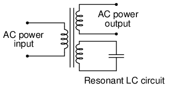
El transformador ferroresonante proporciona regulación de voltaje de la salida.
Además de bloquear los armónicos creados por el núcleo saturado, este circuito resonante también "filtra" las frecuencias armónicas generadas por cargas no lineales (de conmutación) en el circuito de devanado secundario y cualquier armónico presente en el voltaje de la fuente, proporcionando energía "limpia" a la carga.
Los transformadores ferroresonantes ofrecen varias características útiles en el acondicionamiento de energía de CA: voltaje de salida constante dadas variaciones sustanciales en el voltaje de entrada, filtrado de armónicos entre la fuente de energía y la carga, y la capacidad de “aprovechar” breves pérdidas de energía manteniendo una reserva de energía en su circuito de tanque resonante. Estos transformadores también son muy tolerantes a cargas excesivas y sobretensiones transitorias (momentáneas). De hecho, son tan tolerantes que algunos pueden conectarse brevemente en paralelo con fuentes de alimentación de CA no sincronizadas, lo que permite cambiar una carga de una fuente de alimentación a otra en un modo de “conexión antes de interrupción” sin interrupción de la alimentación en el lado secundario.
Desafortunadamente, estos dispositivos tienen desventajas igualmente notables: desperdician mucha energía (debido a pérdidas por histéresis en el núcleo saturado), generandosignificativocalor en el proceso y son intolerantes a las variaciones de frecuencia, lo que significa que no funcionan muy bien cuando se alimentan con pequeños generadores impulsados por motores que tienen una mala regulación de velocidad. Los voltajes producidos en el circuito de devanado resonante/condensador tienden a ser muy altos, lo que requiere capacitores costosos y presenta al técnico de servicio voltajes de trabajo muy peligrosos. Sin embargo, algunas aplicaciones pueden priorizar las ventajas del transformador ferroresonante sobre sus desventajas. Los circuitos semiconductores existen para "acondicionar" la energía CA como una alternativa a los dispositivos ferroresonantes, pero ninguno puede competir con este transformador en términos de pura simplicidad.
- REVISAR:
- Regulación de voltajees la medida de qué tan bien un transformador de potencia puede mantener un voltaje secundario constante dado un voltaje primario constante y una amplia variación en la corriente de carga. Cuanto menor sea el porcentaje (más cercano a cero), más estable será el voltaje secundario y mejor será la regulación que proporcionará.
- A ferroresonanteEl transformador es un transformador especial diseñado para regular el voltaje a un nivel estable a pesar de una amplia variación en el voltaje de entrada.
Transformadores especiales y aplicaciones
Impedance matching
Debido a que los transformadores pueden elevar el voltaje y la corriente a diferentes niveles, y debido a que la potencia se transfiere de manera equivalente entre los devanados primario y secundario, se pueden usar para "convertir" la impedancia de una carga a un nivel diferente. Esa última frase merece alguna explicación, así que investiguemos qué significa.
El propósito de una carga (normalmente) es hacer algo productivo con la potencia que disipa. En el caso de un elemento calefactor resistivo, el propósito práctico de la potencia disipada es calentar algo. Las cargas están diseñadas para disipar de forma segura una cierta cantidad máxima de energía, pero dos cargas de igual potencia nominal no son necesariamente idénticas. Considere estos dos elementos calefactores resistivos de 1000 vatios: (Figura below)
{kind=link}
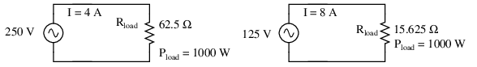
Los elementos calefactores disipan 1000 vatios, a diferentes voltajes y corrientes nominales.
Ambos calentadores disipan exactamente 1000 vatios de potencia, pero lo hacen a diferentes niveles de voltaje y corriente (ya sea 250 voltios y 4 amperios, o 125 voltios y 8 amperios). Utilizando la ley de Ohm para determinar la resistencia necesaria de estos elementos calefactores (R=E/I), llegamos a cifras de 62,5 Ω y 15,625 Ω, respectivamente. Si se trata de cargas de CA, podríamos referirnos a su oposición a la corriente en términos de impedancia en lugar de simplemente resistencia, aunque en este caso eso es todo de lo que están compuestas (sin reactancia). Se diría que el calentador de 250 voltios tiene una carga de impedancia más alta que el calentador de 125 voltios.
Si quisiéramos operar el elemento calefactor de 250 voltios directamente en un sistema de energía de 125 voltios, terminaríamos decepcionados. Con 62,5 Ω de impedancia (resistencia), la corriente sería sólo de 2 amperios (I=E/R; 125/62,5), y la disipación de potencia sería sólo de 250 vatios (P=IE; 125 x 2), o un cuarto de su potencia nominal. La impedancia del calentador y el voltaje de nuestra fuente no coincidirían y no podríamos obtener la disipación de potencia nominal completa del calentador.
Sin embargo, no toda esperanza está perdida. Con un transformador elevador, podríamos operar el elemento calefactor de 250 voltios en el sistema de energía de 125 voltios como en la Figura below.
{kind=link}
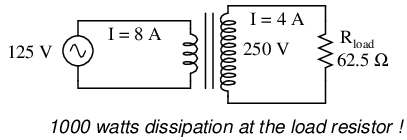
El transformador elevador opera un calentador de 1000 vatios y 250 V desde una fuente de alimentación de 125 V.
La relación de los devanados del transformador proporciona el aumento de voltaje.andreducción actual que necesitamos para que la carga que de otro modo no coincidiría funcione correctamente en este sistema. Observe de cerca las cifras del circuito primario: 125 voltios a 8 amperios. Hasta donde la fuente de alimentación “sabe”, está alimentando una carga de 15,625 Ω (R=E/I) a 125 voltios, ¡no una carga de 62,5 Ω! Las cifras de voltaje y corriente para el devanado primario son indicativas de una impedancia de carga de 15,625 Ω, no de los 62,5 Ω reales de la carga en sí. En otras palabras, nuestro transformador elevador no sólo ha transformado el voltaje y la corriente, sino que también ha transformadoimpedanciatambién.
La relación de transformación de la impedancia es el cuadrado de la relación de transformación tensión/corriente, al igual que la relación de inductancia del devanado:
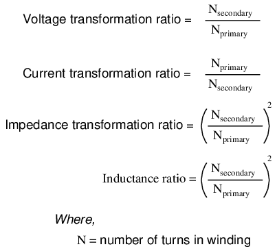
Esto coincide con nuestro ejemplo del transformador elevador 2:1 y la relación de impedancia de 62,5 Ω a 15,625 Ω (una relación 4:1, que es 2:1 al cuadrado). La transformación de impedancia es una capacidad muy útil de los transformadores, ya que permite que una carga disipe toda su potencia nominal incluso si el sistema de energía no tiene el voltaje adecuado para hacerlo directamente.
Recuerde de nuestro estudio del análisis de redes laTeorema de transferencia de potencia máxima, que establece que la cantidad máxima de energía será disipada por una resistencia de carga cuando esa resistencia de carga sea igual a la resistencia Thevenin/Norton de la red que suministra la energía. Sustituya la palabra "impedancia" por "resistencia" en esa definición y tendrá la versión AC de ese teorema. Si estamos tratando de obtener la disipación de potencia máxima teórica de una carga, debemos poder hacer coincidir adecuadamente la impedancia de la carga y la impedancia de la fuente (Thevenin/Norton). Esto generalmente es más preocupante en circuitos eléctricos especializados, como sistemas de transmisores/antenas de radio y amplificadores de audio/altavoces. Tomemos un sistema amplificador de audio y veamos cómo funciona: (Figura below)
{kind=link}
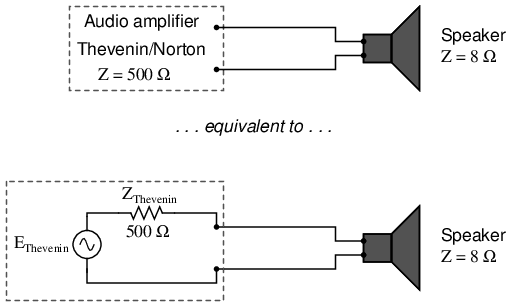
El amplificador con impedancia de 500 Ω controla 8 Ω a una potencia mucho menor que la máxima.
Con una impedancia interna de 500 Ω, el amplificador sólo puede entregar potencia total a una carga (altavoz) que también tenga 500 Ω de impedancia. Una carga de este tipo reduciría un voltaje más alto y consumiría menos corriente que un altavoz de 8 Ω que disipara la misma cantidad de energía. Si un altavoz de 8 Ω se conectara directamente al amplificador de 500 Ω como se muestra, eldesajuste de impedanciaresultaría en un rendimiento muy pobre (potencia máxima baja). Además, el amplificador tendería a disipar más energía de la que le corresponde en forma de calor al intentar accionar el altavoz de baja impedancia.
Para que este sistema funcione mejor, podemos usar un transformador para igualar estas impedancias no coincidentes. Dado que vamos a pasar de un suministro de alta impedancia (alto voltaje, baja corriente) a una carga de baja impedancia (bajo voltaje, alta corriente), necesitaremos usar un transformador reductor: (Figura below)
{kind=link}
El transformador de adaptación de impedancia combina un amplificador de 500 Ω con un altavoz de 8 Ω para una máxima eficiencia.
Para obtener una relación de transformación de impedancia de 500:8, necesitaríamos una relación de devanado igual a la raíz cuadrada de 500:8 (la raíz cuadrada de 62,5:1 o 7,906:1). Con dicho transformador en su lugar, el altavoz cargará el amplificador en el grado justo, extrayendo energía a los niveles correctos de voltaje y corriente para satisfacer el teorema de transferencia de potencia máxima y lograr la entrega de energía más eficiente a la carga. El uso de un transformador en esta capacidad se llamaadaptación de impedancia.
Cualquiera que haya montado en una bicicleta de varias velocidades puede comprender intuitivamente el principio de adaptación de impedancias. Las piernas de un ser humano producirán la máxima potencia al girar la manivela de la bicicleta a una velocidad particular (alrededor de 60 a 90 revoluciones por minuto). Por encima o por debajo de esa velocidad de rotación, los músculos de las piernas humanas son menos eficientes para generar energía. El propósito de los “engranajes” de la bicicleta es hacer coincidir la impedancia de las piernas del ciclista con las condiciones de conducción para que siempre giren la manivela a la velocidad óptima.
Si el ciclista intenta comenzar a moverse mientras la bicicleta está en su marcha “superior”, le resultará muy difícil moverse. ¿Es porque el jinete es débil? No, es porque la alta relación de aumento de la cadena y los piñones de la bicicleta en esa marcha superior presenta un desajuste entre las condiciones (mucha inercia que superar) y sus piernas (necesidad de girar a 60-90 RPM para obtener la máxima potencia). Por otro lado, seleccionar una marcha demasiado baja permitirá al ciclista ponerse en marcha inmediatamente, pero limitará la velocidad máxima que podrá alcanzar. Nuevamente, ¿la falta de velocidad es una indicación de debilidad en las piernas del ciclista? No, es porque la relación de velocidad más baja de la marcha seleccionada crea otro tipo de desajuste entre las condiciones (baja carga) y las piernas del ciclista (perdiendo potencia si gira a más de 90 RPM). Lo mismo ocurre con las fuentes y cargas de energía eléctrica: debe haber una coincidencia de impedancia para lograr la máxima eficiencia del sistema. En los circuitos de CA, los transformadores realizan la misma función de adaptación que las ruedas dentadas y la cadena (“engranajes”) de una bicicleta para hacer coincidir fuentes y cargas que de otro modo no coincidirían.
Los transformadores de adaptación de impedancia no se diferencian fundamentalmente de cualquier otro tipo de transformador en construcción o apariencia. En la siguiente fotografía se muestra un pequeño transformador de adaptación de impedancia (de unos dos centímetros de ancho) para aplicaciones de audiofrecuencia: (Figura below)
{kind=link}
Transformador de adaptación de impedancia de frecuencia de audio.
Se puede ver otro transformador de adaptación de impedancia en esta placa de circuito impreso, en la esquina superior derecha, inmediatamente a la izquierda de las resistencias R.2y r1. Está etiquetado como “T1”: (Figura below)
{kind=link}
Transformador de adaptación de impedancia de audio montado en una placa de circuito impreso, arriba a la derecha.
Transformadores de tensión
Los transformadores también se pueden utilizar en sistemas de instrumentación eléctrica. Debido a la capacidad de los transformadores para aumentar o reducir el voltaje y la corriente, y al aislamiento eléctrico que proporcionan, pueden servir como una forma de conectar instrumentación eléctrica a sistemas de energía de alto voltaje y alta corriente. Supongamos que quisiéramos medir con precisión el voltaje de un sistema de energía de 13,8 kV (un voltaje de distribución de energía muy común en la industria estadounidense): (Figura below)
{kind=link}
La medición directa de alto voltaje con un voltímetro es un peligro potencial para la seguridad.
Diseñar, instalar y mantener un voltímetro capaz de medir directamente 13.800 voltios CA no sería una tarea fácil. El riesgo para la seguridad por sí solo de introducir conductores de 13,8 kV en un panel de instrumentos sería grave, sin mencionar el diseño del voltímetro en sí. Sin embargo, al usar un transformador reductor de precisión, podemos reducir los 13,8 kV a un nivel seguro de voltaje en una relación constante y aislarlo de las conexiones del instrumento, agregando un nivel adicional de seguridad al sistema de medición: (Figura below)
{kind=link}
Aplicación de instrumentación: el "transformador de potencial" escala con precisión el alto voltaje peligroso a un valor seguro aplicable a un voltímetro convencional.
Ahora el voltímetro lee una fracción o relación precisa del voltaje real del sistema, y su escala está configurada para leer como si estuviera midiendo el voltaje directamente. El transformador mantiene el voltaje del instrumento a un nivel seguro y lo aísla eléctricamente del sistema de energía, por lo que no hay conexión directa entre las líneas de energía y el instrumento o el cableado del instrumento. Cuando se utiliza en esta capacidad, el transformador se llamaTransformador potencial, o simplementePT.
Los transformadores de potencial están diseñados para proporcionar una relación de reducción de voltaje lo más precisa posible. Para ayudar a una regulación precisa del voltaje, la carga se mantiene al mínimo: el voltímetro está diseñado para tener una alta impedancia de entrada para extraer la menor corriente posible del PT. Como puede ver, se ha conectado un fusible en serie con el devanado primario del PT, para mayor seguridad y facilidad a la hora de desconectar el PT del circuito.
Un voltaje secundario estándar para un PT es de 120 voltios CA, para un voltaje de línea de alimentación nominal completo. El rango de voltímetro estándar que acompaña a un PT es de 150 voltios, escala completa. Se pueden fabricar PT con relaciones de bobinado personalizadas para adaptarse a cualquier aplicación. Esto se presta bien a la estandarización industrial de los propios instrumentos voltímetros, ya que el PT tendrá el tamaño adecuado para reducir el voltaje del sistema a este nivel de instrumento estándar.
Transformadores de corriente
Siguiendo la misma línea de pensamiento, podemos usar un transformador para reducir la corriente a través de una línea eléctrica, de modo que podamos medir de forma segura y sencilla las corrientes altas del sistema con amperímetros económicos. Por supuesto, dicho transformador estaría conectado en serie con la línea eléctrica, como (Figura below).
{kind=link}
Aplicación de instrumentación: el “transformador de corriente” reduce la corriente alta a un valor aplicable a un amperímetro convencional.
Tenga en cuenta que si bien el PT es un dispositivo reductor, elTransformador de corriente (or CT) es un dispositivo elevador (con respecto al voltaje), que es lo que se necesita para aumentarabajola corriente de la línea eléctrica. Muy a menudo, los TC se construyen como dispositivos en forma de rosquilla a través de los cuales pasa el conductor de la línea eléctrica, actuando la propia línea eléctrica como un devanado primario de una sola vuelta: (Figura below)
{kind=link}
A través de la abertura se pasa el conductor de corriente a medir. La corriente reducida está disponible en los cables.
Algunos CT están hechos para abrirse con bisagras, lo que permite la inserción alrededor de un conductor de alimentación sin alterar el conductor en absoluto. La corriente secundaria estándar de la industria para un CT es un rango de 0 a 5 amperios CA. Al igual que los PT, los CT se pueden fabricar con relaciones de bobinado personalizadas para adaptarse a casi cualquier aplicación. Debido a que su corriente secundaria de “carga completa” es de 5 amperios, las relaciones de CT generalmente se describen en términos de amperios primarios de carga completa a 5 amperios, así:
La TC en forma de “rosquilla” que se muestra en la fotografía tiene una relación de 50:5. Es decir, cuando el conductor que pasa por el centro del toro transporta 50 amperios de corriente (CA), habrá 5 amperios de corriente inducida en el devanado del TC.
Debido a que los CT están diseñados para alimentar amperímetros, que son cargas de baja impedancia, y están enrollados como transformadores elevadores de voltaje, nunca deberían,alguna vezfuncionar con un devanado secundario en circuito abierto. Si no se tiene en cuenta esta advertencia, el CT producirá voltajes secundarios extremadamente altos, peligrosos tanto para el equipo como para el personal. Para facilitar el mantenimiento de la instrumentación del amperímetro, los interruptores de cortocircuito a menudo se instalan en paralelo con el devanado secundario del CT, para cerrarse cada vez que se retira el amperímetro para darle servicio: (Figura below)
{kind=link}
El interruptor de cortocircuito permite retirar el amperímetro de un circuito transformador de corriente activo.
Aunque pueda parecer extrañointencionalmentecortocircuitar un componente del sistema eléctrico, es perfectamente apropiado y muy necesario cuando se trabaja con transformadores de corriente.
Transformadores de núcleo de aire
Otro tipo de transformador especial, que se ve a menudo en circuitos de radiofrecuencia, es elnúcleo de airetransformador. (Cifra below) Fiel a su nombre, un transformador de núcleo de aire tiene sus devanados enrollados alrededor de una forma no magnética, generalmente un tubo hueco de algún material. El grado de acoplamiento (inductancia mutua) entre los devanados de un transformador de este tipo es muchas veces menor que el de un transformador de núcleo de hierro equivalente, pero las características indeseables de un núcleo ferromagnético (pérdidas por corrientes parásitas, histéresis, saturación, etc.) se eliminan por completo. Es en aplicaciones de alta frecuencia donde estos efectos de los núcleos de hierro son más problemáticos.
{kind=link}
Los transformadores con núcleo de aire pueden enrollarse en forma cilíndrica (a) o toroidal (b). Centro aprovechado primario con secundario (a). Devanado bifilar en forma toroidal (b).
El devanado del solenoide con toma interior (Figura (a) above), sin el sobrebobinado, podría igualar impedancias desiguales cuando no se requiere aislamiento de CC. Cuando se requiere aislamiento, el devanado adicional se agrega sobre un extremo del devanado principal. Los transformadores de núcleo de aire se utilizan en radiofrecuencias cuando las pérdidas del núcleo de hierro son demasiado altas. Con frecuencia, los transformadores de núcleo de aire se ponen en paralelo con un condensador para sintonizarlo en resonancia. El sobrebobinado está conectado entre una antena de radio y tierra para una de esas aplicaciones. El secundario está sintonizado en resonancia con un condensador variable. La salida se puede tomar del punto de derivación para amplificación o detección. En los receptores de radio se utilizan transformadores de núcleo de aire de pequeño tamaño milimétrico. Los transmisores de radio más grandes pueden utilizar bobinas del tamaño de un medidor. Los transformadores de solenoide con núcleo de aire sin blindaje se montan en ángulo recto entre sí para evitar acoplamientos parásitos.
El acoplamiento parásito se minimiza cuando el transformador está enrollado en forma toroidal. (Figura (b) above) Los transformadores toroidales con núcleo de aire también muestran un mayor grado de acoplamiento, particularmente parabifilardevanados. Los devanados bifilares se enrollan a partir de un par de cables ligeramente torcidos. Esto implica una relación de vueltas de 1:1. Se pueden agrupar tres o cuatro cables para 1:2 y otras relaciones integrales. Los devanados no tienen por qué ser bifilares. Esto permite relaciones de vueltas arbitrarias. Sin embargo, el grado de acoplamiento se ve afectado. Los transformadores toroidales con núcleo de aire son raros, excepto para trabajos en VHF (muy alta frecuencia). Para frecuencias de radio más bajas se prefieren materiales de núcleo distintos del aire, como hierro en polvo o ferrita.
Bobina de Tesla
Un ejemplo notable de un transformador de núcleo de aire es elBobina de Tesla, lleva el nombre del genio eléctrico serbio Nikola Tesla, quien también fue el inventor del motor de CA de campo magnético giratorio, los sistemas de energía de CA polifásicos y muchos elementos de la tecnología de radio. La bobina Tesla es un transformador elevador resonante de alta frecuencia que se utiliza para producir voltajes extremadamente altos. Uno de los sueños de Tesla era emplear su tecnología de bobinas para distribuir energía eléctrica sin necesidad de cables, simplemente transmitiéndola en forma de ondas de radio que pudieran recibirse y conducirse a las cargas mediante antenas. El esquema básico de una bobina Tesla se muestra en la figura. below.
{kind=link}
Bobina de Tesla: algunas vueltas primarias pesadas, muchas vueltas secundarias.
El condensador, junto con el devanado primario del transformador, forma un circuito de tanque. El devanado secundario se enrolla muy cerca del primario, generalmente alrededor de la misma forma no magnética. Existen varias opciones para "excitar" el circuito primario, siendo la más simple una fuente de CA de alto voltaje y baja frecuencia y un vía de chispas: (Figura below)
{kind=link}
Diagrama de nivel del sistema de bobina Tesla con accionamiento de vía de chispa.
El propósito de la fuente de alimentación de CA de alto voltaje y baja frecuencia es "cargar" el circuito del tanque primario. Cuando se dispara el explosor, su baja impedancia actúa para completar el circuito del tanque del condensador/bobina primaria, permitiéndole oscilar a su frecuencia de resonancia. Los inductores "RFC" son "choques de radiofrecuencia" que actúan como altas impedancias para evitar que la fuente de CA interfiera con el circuito del tanque oscilante.
El lado secundario del transformador de bobina Tesla también es un circuito de tanque, que depende de la capacitancia parásita (perversa) existente entre el terminal de descarga y la tierra para complementar la inductancia del devanado secundario. Para un funcionamiento óptimo, este circuito de tanque secundario está sintonizado a la misma frecuencia de resonancia que el circuito primario, con energía intercambiada no sólo entre condensadores e inductores durante la oscilación resonante, sino también entre los devanados primario y secundario. Los resultados visuales son espectaculares: (Figura below)
{kind=link}
Descarga de alta frecuencia y alto voltaje de la bobina de Tesla.
Las bobinas de Tesla encuentran aplicación principalmente como dispositivos novedosos, apareciendo en ferias de ciencias de escuelas secundarias, talleres en sótanos y, ocasionalmente, en películas de ciencia ficción de bajo presupuesto.
Cabe señalar que las bobinas de Tesla pueden ser dispositivos extremadamente peligrosos. Las quemaduras causadas por corriente de radiofrecuencia (“RF”), como todas las quemaduras eléctricas, pueden ser muy profundas, a diferencia de las quemaduras en la piel causadas por el contacto con objetos calientes o llamas. Aunque la descarga de alta frecuencia de una bobina de Tesla tiene la curiosa propiedad de estar más allá de la frecuencia de “percepción de impacto” del sistema nervioso humano, ¡esto no significa que las bobinas de Tesla no puedan herirte o incluso matarte! Le recomiendo encarecidamente que busque la ayuda de un experimentador experimentado en bobinas de Tesla si desea construir una usted mismo.
Reactores saturables
Hasta ahora, hemos explorado el transformador como un dispositivo para convertir diferentes niveles de voltaje, corriente e incluso impedancia de un circuito a otro. Ahora lo veremos como un tipo de dispositivo completamente diferente: uno que permite que una pequeña señal eléctrica ejerzacontrolsobre una cantidad mucho mayor de energía eléctrica. En este modo, un transformador actúa comoamplificador.
El dispositivo al que me refiero se llamareactor de núcleo saturable, o simplementereactor saturable. En realidad, no se trata en absoluto de un transformador, sino más bien de un tipo especial de inductor cuya inductancia puede variar mediante la aplicación de una corriente continua a través de un segundo devanado enrollado alrededor del mismo núcleo de hierro. Al igual que el transformador ferroresonante, el reactor saturable se basa en el principio de saturación magnética. Cuando un material como el hierro está completamente saturado (es decir, todos sus dominios magnéticos están alineados con la fuerza magnetizante aplicada), aumentos adicionales de corriente a través del devanado magnetizante no darán como resultado mayores aumentos del flujo magnético.
Ahora bien, la inductancia es la medida de qué tan bien un inductor se opone a los cambios de corriente desarrollando un voltaje en dirección opuesta. La capacidad de un inductor para generar este voltaje opuesto está directamente relacionada con el cambio en el flujo magnético dentro del inductor resultante del cambio en la corriente y el número de vueltas del devanado en el inductor. Si un inductor tiene un núcleo saturado, no se producirá más flujo magnético debido a nuevos aumentos de corriente, por lo que no se inducirá tensión en oposición al cambio de corriente. En otras palabras, un inductor pierde su inductancia (capacidad de oponerse a los cambios de corriente) cuando su núcleo se satura magnéticamente.
Si la inductancia de un inductor cambia, entonces su reactancia (e impedancia) a la corriente CA también cambia. En un circuito con una fuente de voltaje constante, esto resultará en un cambio en la corriente: (Figura below)
{kind=link}
Si L cambia en inductancia, ZLcambiará correspondientemente, cambiando así la corriente del circuito.
Un reactor saturable aprovecha este efecto forzando al núcleo a un estado de saturación con un fuerte campo magnético generado por la corriente a través de otro devanado. El devanado de “potencia” del reactor es el que transporta la corriente de carga de CA, y el devanado de “control” es el que transporta una corriente de CC lo suficientemente fuerte como para llevar el núcleo a la saturación: (Figura below)
{kind=link}
La CC, a través del devanado de control, satura el núcleo. Por lo tanto, se modula la inductancia, impedancia y corriente del devanado de potencia.
El símbolo del transformador de aspecto extraño que se muestra en el esquema anterior representa un reactor de núcleo saturable, siendo el devanado superior el devanado de control de CC y el inferior el devanado de “potencia” a través del cual pasa la corriente CA controlada. El aumento de la corriente de control de CC produce más flujo magnético en el núcleo del reactor, acercándolo a una condición de saturación, disminuyendo así la inductancia del devanado de potencia, disminuyendo su impedancia y aumentando la corriente a la carga. Por tanto, la corriente de control CC es capaz de ejercercontrolsobre la corriente CA entregada a la carga.
El circuito mostrado funcionaría, pero no muy bien. El primer problema es la acción natural del transformador del reactor saturable: la corriente CA a través del devanado de potencia inducirá un voltaje en el devanado de control, lo que puede causar problemas a la fuente de energía de CC. Además, los reactores saturables tienden a regular la potencia de CA sólo en una dirección: en la mitad del ciclo de CA, las mmf de ambos devanados se suman; en la otra mitad, restan. Por lo tanto, el núcleo tendrá más flujo durante una mitad del ciclo de CA que la otra, y se saturará primero en esa mitad del ciclo, haciendo pasar la corriente de carga más fácilmente en una dirección que en la otra. Afortunadamente, ambos problemas se pueden superar con un poco de ingenio: (Figura below)
{kind=link}
Los devanados de control de CC fuera de fase permiten un control simétrico de CA.
Observe la ubicación de los puntos de fase en los dos reactores: los devanados de potencia están "en fase" mientras que los de control están "desfasados". Si ambos reactores son idénticos, cualquier voltaje inducido en los devanados de control por la corriente de carga a través de los devanados de potencia se cancelará a cero en los terminales de la batería, eliminando así el primer problema mencionado. Además, dado que la corriente de control de CC a través de ambos reactores produce flujos magnéticos en diferentes direcciones a través de los núcleos del reactor, un reactor se saturará más en un ciclo de energía de CA mientras que el otro reactor se saturará más en el otro, igualando así la acción de control a lo largo de cada medio ciclo de modo que la energía de CA se "estrangule" simétricamente. Esta fase de los devanados de control se puede lograr con dos reactores separados como se muestra, o en un diseño de reactor único con disposición inteligente de los devanados y el núcleo.
La tecnología de reactores saturables incluso se ha miniaturizado al nivel de la placa de circuito en paquetes compactos más generalmente conocidos comoamplificadores magnéticos. Personalmente, esto me parece fascinante: el efecto de amplificación (una señal eléctrica controlando a otra), que normalmente requiere el uso de tubos de vacío físicamente frágiles o dispositivos semiconductores eléctricamente “frágiles”, puede realizarse en un dispositivo tanto física como eléctricamente resistente. Los amplificadores magnéticos tienen desventajas sobre sus homólogos más frágiles, a saber, tamaño, peso, no linealidad y ancho de banda (respuesta de frecuencia), pero su absoluta simplicidad aún exige cierto grado de apreciación, si no de aplicación práctica.
Los reactores de núcleo saturable se conocen menos comúnmente como "inductores de núcleo saturable" otransductores.
Transformador Scott-T
El sistema de energía polifásico original de Nikola Tesla se basaba en componentes bifásicos fáciles de construir. Sin embargo, a medida que aumentaron las distancias de transmisión, el sistema trifásico más eficiente de la línea de transmisión se volvió más prominente. Los componentes 2-φ y 3-φ coexistieron durante varios años. La conexión del transformador Scott-T permitió interconectar componentes de 2-φ y 3-φ, como motores y alternadores. Yamamoto y Yamaguchi:
En 1896, General Electric construyó una línea de transmisión trifásica de 35,5 km (22 millas) operada a 11 kV para transmitir energía a Buffalo, Nueva York, desde el Proyecto de las Cataratas del Niágara. La energía generada en dos fases fue cambiada a trifásico mediante el uso de transformaciones Scott-T.[MYA]
El transformador Scott-T convierte 2-φ en 3-φ, o viceversa.
El conjunto de transformadores Scott-T, figura above, consta de un transformador T1 con toma central y un transformador T2 con toma del 86,6% en el lado 3-φ del circuito. Los primarios de ambos transformadores están conectados a los voltajes 2-φ. Un extremo del devanado secundario T2 86,6% es una salida de 3-φ, el otro extremo está conectado a la toma central secundaria T1. Ambos extremos del secundario T1 son las otras dos conexiones 3-φ.
{kind=link}
La aplicación de energía del generador Niagara de 2-φ produjo una salida de 3-φ para la línea de transmisión de 3-φ más eficiente. Más común hoy en día es la aplicación de potencia de 3-φ para producir una salida de 2-φ para accionar un viejo motor de 2-φ.
En la figura below, utilizamos vectores en notación polar y compleja para demostrar que Scott-T convierte un par de voltajes 2-φ en 3-φ. Primero, uno de los voltajes 3-φ es idéntico a un voltaje 2-φ debido a la relación T1 del transformador 1:1, VP12= V2P1. El secundario con toma central T1 produce polaridades opuestas de 0,5 V2P1en los extremos secundarios. Este ∠0ose resta vectorialmente del voltaje secundario T2 debido a las ecuaciones KVL V31, V23. El voltaje secundario T2 es 0.866V2P2debido al grifo del 86,6%. Tenga en cuenta que esta 2da fase del 2-φ es ∠90o. Este 0.866V2P2se agrega en V31, restado en V23en las ecuaciones KVL.
{kind=link}
Ecuaciones de conversión de 2-φ a 3-φ del transformador Scott-T.
Mostramos polaridades "CC" en todo este circuito de CA únicamente, para realizar un seguimiento de las polaridades del bucle de voltaje de Kirchhoff. Restando ∠0oequivale a sumar ∠180o. El resultado final es cuando sumamos el 86,6% de ∠90oal 50% de ∠180oobtenemos ∠120o. Restando el 86,6% de ∠90odesde el 50% de ∠180orendimientos ∠-120oo ∠240o.
Explicación gráfica de ecuaciones en la figura. previous.
En la figura aboveMostramos gráficamente los vectores 2-φ en (a). En (b), los vectores son escalados por los transformadores T1 y T2 a 0,5 y 0,866 respectivamente. En (c) 1∠120o= -0,5∠0o+ 0,866∠90oy 1∠240o= -0,5∠0o- 0,866∠90o. Las tres fases de salida son 1∠120oy 1∠240ode (c), junto con la entrada 1∠0o(a).
{kind=link}
Transformador diferencial variable lineal (LVDT)
A transformador diferencial variable lineal(LVDT) tiene una bobina primaria impulsada por CA entre dos secundarias en una forma de núcleo de aire cilíndrico. (Cifra below) Una babosa ferromagnética móvil convierte el desplazamiento en un voltaje variable cambiando el acoplamiento entre los devanados primario y secundario accionados. El LVDT es un transductor de medición de desplazamiento o distancia. Hay unidades disponibles para medir el desplazamiento en una distancia de una fracción de milímetro a medio metro. Los LVDT son robustos y resistentes a la suciedad en comparación con los codificadores ópticos lineales.
{kind=link}
LVDT: transformador diferencial variable lineal.
El voltaje de excitación está en el rango de 0,5 a 10 VCA a una frecuencia de 1 a 200 Khz. A estas frecuencias es adecuado un núcleo de ferrita. Se extiende fuera del cuerpo mediante una varilla no magnética. A medida que el núcleo se mueve hacia el devanado superior, el voltaje a través de esta bobina aumenta debido al mayor acoplamiento, mientras que el voltaje en la bobina inferior disminuye. Si el núcleo se mueve hacia el devanado inferior, el voltaje en esta bobina aumenta a medida que el voltaje disminuye en la bobina superior. En teoría, un bloque centrado produce voltajes iguales en ambas bobinas. En la práctica, la inductancia de fuga evita que el nulo caiga hasta 0 V.
Con un slug centrado, los secundarios cableados opuestos en serie cancelan el rendimiento V13= 0. Mover el trozo hacia arriba aumenta V13. Tenga en cuenta que está en fase con V1, el devanado superior, y 180ofuera de fase con V3, bobinado inferior.
Mover el slug hacia abajo desde la posición central aumenta V13. Sin embargo, es 180odesfasado con V1, el devanado superior y en fase con V3, bobinado inferior. Mover el slug de arriba a abajo muestra un mínimo en el punto central, con un ángulo de 180oinversión de fase al pasar por el centro.
- REVISAR:
- Los transformadores se pueden utilizar para transformar la impedancia, así como el voltaje y la corriente. Cuando esto se hace para mejorar la transferencia de potencia a una carga, se llamaadaptación de impedancia.
- A Transformador potencial(PT) es un transformador de instrumentos especial diseñado para proporcionar una relación de reducción de voltaje precisa para voltímetros que miden voltajes de sistemas de alta potencia.
- A Transformador de corriente(CT) es otro transformador de instrumentos especial diseñado para reducir la corriente a través de una línea eléctrica a un nivel seguro para que la mida un amperímetro.
- An núcleo de aireEl transformador es aquel que carece de núcleo ferromagnético.
- A Bobina de Teslaes un transformador elevador resonante con núcleo de aire diseñado para producir voltajes de CA muy altos a alta frecuencia.
- A reactor saturableEs un tipo especial de inductor, cuya inductancia puede controlarse mediante corriente continua a través de un segundo devanado alrededor del mismo núcleo. Con suficiente corriente continua, el núcleo magnético se puede saturar, disminuyendo la inductancia del devanado de potencia de forma controlada.
- A Transformador Scott-Tconvierte potencia 3-φ en potencia 2-φ y viceversa.
- A transformador diferencial variable lineal, también conocido como LVDT, es un dispositivo de medición de distancia. Tiene un núcleo ferromagnético móvil para variar el acoplamiento entre el primario excitado y un par de secundarios.
Consideraciones prácticas
Capacidad de potencia
Como ya se ha observado, los transformadores deben estar bien diseñados para lograr un acoplamiento de potencia aceptable, una regulación estricta del voltaje y una baja distorsión de la corriente de excitación. Además, los transformadores deben diseñarse para transportar los valores esperados de corriente del devanado primario y secundario sin ningún problema. Esto significa que los conductores del devanado deben estar hechos de alambre del calibre adecuado para evitar problemas de calentamiento. Un transformador ideal tendría un acoplamiento perfecto (sin inductancia de fuga), una regulación de voltaje perfecta, una corriente de excitación perfectamente sinusoidal, sin histéresis ni pérdidas por corrientes parásitas y un cable lo suficientemente grueso como para manejar cualquier cantidad de corriente. Desafortunadamente, el transformador ideal tendría que ser infinitamente grande y pesado para cumplir estos objetivos de diseño. Así, en el negocio deprácticodiseño del transformador, se deben hacer concesiones.
El núcleo de hierro del transformador debe tener el tamaño adecuado para soportar el flujo total sin una saturación indebida. La clasificación de voltamperaje y las propiedades magnéticas del material del núcleo determinan el flujo total permitido. Se requiere un núcleo más grande con menos vueltas de cable de mayor diámetro para un transformador con clasificación de voltamperaje más alto. Muy pocas vueltas para un tamaño de núcleo particular provocarán la saturación magnética del núcleo, lo que provoca una corriente excesiva y un calentamiento.
Además, el aislamiento del conductor del devanado es una preocupación cuando se encuentran altos voltajes, como suele ocurrir en los transformadores de distribución de energía elevadores y reductores. No sólo los devanados tienen que estar bien aislados del núcleo de hierro, sino que cada devanado tiene que estar suficientemente aislado del otro para mantener el aislamiento eléctrico entre los devanados.
Respetando estas limitaciones, los transformadores están clasificados para ciertos niveles de voltaje y corriente del devanado primario y secundario, aunque la clasificación de corriente generalmente se deriva de una clasificación de voltios-amperios (VA) asignada al transformador. Por ejemplo, tome un transformador reductor con una tensión nominal primaria de 120 voltios, una tensión nominal secundaria de 48 voltios y una clasificación VA de 1 kVA (1000 VA). Las corrientes máximas de los devanados se pueden determinar como tal:
A veces, los devanados soportarán corrientes nominales en amperios, pero esto suele verse en transformadores pequeños. Los transformadores grandes casi siempre se clasifican en términos de voltaje de devanado y VA o kVA.
Diseño de devanados
El número de vueltas en el secundario de un transformador se calcula fácilmente en función de la relación de tensión y las vueltas del primario Ns=Np(Vs/Vp). El problema es la determinación del número de vueltas primarias de un transformador de potencia con núcleo de hierro. La densidad de flujo magnético y el área de sección transversal de un núcleo de hierro determinan el número mínimo de vueltas en el primario. Otros factores incluyen el voltaje y la frecuencia primarios y el aumento de temperatura permitido por encima de la temperatura ambiente. El propósito de esta sección es determinar el número mínimo de vueltas primarias para un tamaño de núcleo determinado.
Área del núcleo del transformador
Diseño de núcleo y devanados de transformador.
- Comience con uno de los siguientes: clasificación de voltios y amperios deseada o área central conocida
- AV deseada:Calcule el área de la sección transversal requerida A' para un núcleo. ecuación (1) Tabla below.
- Área central conocida:Para un núcleo disponible, mida y calcule A' según la Tabla above. Calcular el VA que soportará el núcleo con la ecuación (2) Tabla below.
- Mesa de consulta below, seleccione la siguiente línea VA superior a su VA principal. Seleccione la densidad de flujo B de esa línea.
- Calcule Np vueltas primarias con la ecuación (3), usando la parte A o A' de la ecuación (3) Tabla below.
- Tamaño del cable
- Mesa de consulta below, misma línea que antes, extraiga el valor cir-mil/Amp. Esta es la cantidad de milésimas circulares por amperio de sección transversal que se requieren para el primario del núcleo.
- Área del cable cir-mil = Ip * cir-mil/Amp de la tabla below.
- Seleccione un tamaño de cable AWG correspondiente al área de cable cir-mil anterior en ConsulteVolume V - Reference, Ch 1 Useful Equations, Wire sizing for inductorsElija una línea con el siguiente valor mayor en mil circulares. El AWG correspondiente es el tamaño del devanado primario.
- Elija Es el voltaje secundario. Tabla de ecuación (5) belowDa el número de vueltas secundarias. Tenga en cuenta que el factor 1,05 corrige las pérdidas en un transformador práctico.
- Is = Ip(Ep/Es)
- Determine el tamaño del cable AWG para el secundario de manera similar al procedimiento para el tamaño del cable primario, usando el mismo valor cir-mil/Amp.
{kind=link}
{kind=link}
Ecuaciones de diseño de transformadores, según ITT[RDR]
Transformer core and wire sizing. After ITT[RDR]
| VA | B | Amperios/pulgadas cuadradas | cir-mil/amperio |
| 24 | 13,500 | 2330 | 545 |
| 37 | 13,000 | 2130 | 596 |
| 54 | 13,000 | 2030 | 626 |
| 82 | 12,500 | 1800 | 706 |
| 110 | 12,000 | 1770 | 718 |
| 145 | 12,000 | 1600 | 794 |
| 195 | 11,000 | 1500 | 847 |
| 525 | 10,500 | 1220 | 1041 |
Mesa belowmuestra los resultados de los cálculos para los distintos núcleos en la tabla above.
- Volt-amperios VA y Flux Denisty B - copiados de la tabla above)
- Área central A' pulgadas cuadradas - resultado de la ecuación (1)
- Área central A pulgadas cuadradas - resultado de la ecuación (1b)
- Densidad de corriente Amp/pulgada cuadrada - Amp/pulgada cuadrada de[RDR]
- Densidad de corriente convertida Amp/sq-in a cir-mil/Amp - cir-mil/Amp = (1.27e6)/(Amp/sq-in)
- Se convierte en Pri. Np - Calculado a partir de la ecuación (3)
- área del cable cir-mil - Calculado: (Densidad de corriente cir-mil/Amp)*(Ip), Ip de la ecuación (4)
- Tamaño AWG del cable primario correspondiente aVolume V - Reference, Ch 1 Useful Equations, Wire sizing for inductors
Transformer core and wire sizing for example cores
| VA | Flujo | Centro | Centro | Actual | Actual | vueltas | cable | A |
| Densidad | Área | Área | Densidad | Densidad | pri. | área | W | |
| Ep*Ip | B | A' pulgadas cuadradas | Un cm2 | Amperios/pulgadas cuadradas | cir-mil/amperio | Np | cir-mil | G |
| 24 | 13,500 | 0.878 | 5.665 | 2330 | 545 | 589 | 109 | 29 |
| 37 | 13,000 | 1.09 | 7.032 | 2130 | 596 | 493 | 184 | 27 |
| 54 | 13,000 | 1.317 | 8.497 | 2030 | 626 | 408 | 282 | 25 |
| 82 | 12,500 | 1.623 | 10.471 | 1800 | 706 | 344 | 482 | 23 |
| 110 | 12,000 | 1.88 | 12.129 | 1770 | 718 | 309 | 658 | 21 |
| 145 | 12,000 | 2.158 | 13.923 | 1600 | 794 | 270 | 959 | 20 |
| 195 | 11,000 | 2.503 | 16.148 | 1500 | 847 | 254 | 1376 | 18 |
| 525 | 10,500 | 4.106 | 26.49 | 1220 | 1041 | 162 | 4554 | 13 |
Energy losses
Cuando los transformadores transfieren energía, lo hacen con una pérdida mínima. Como se indicó anteriormente, los diseños de transformadores de potencia modernos suelen superar el 95% de eficiencia. Sin embargo, es bueno saber adónde va parte de esta energía perdida y qué causa que se pierda.
Por supuesto, se pierde energía debido a la resistencia de los devanados del cable. A menos que se utilicen cables superconductores, siempre habrá energía disipada en forma de calor a través de la resistencia de los conductores que transportan corriente. Debido a que los transformadores requieren longitudes de cable tan largas, esta pérdida puede ser un factor importante. Aumentar el calibre del alambre de bobinado es una forma de minimizar esta pérdida, pero sólo con aumentos sustanciales en costo, tamaño y peso.
Dejando a un lado las pérdidas resistivas, la mayor parte de la pérdida de potencia del transformador se debe a efectos magnéticos en el núcleo. Quizás la más significativa de estas “pérdidas centrales” seapérdida por corrientes parásitas, que es la disipación de potencia resistiva debido al paso de corrientes inducidas a través del hierro del núcleo. Debido a que el hierro es un conductor de electricidad además de ser un excelente “conductor” de flujo magnético, habrá corrientes inducidas en el hierro del mismo modo que hay corrientes inducidas en los devanados secundarios del campo magnético alterno. Estas corrientes inducidas, como se describe en la cláusula de perpendicularidad de la Ley de Faraday, tienden a circular a través de la sección transversal del núcleo perpendicularmente a las espiras del devanado primario. Su movimiento circular les da su nombre inusual: como remolinos en una corriente de agua que circulan en lugar de moverse en línea recta.
El hierro es un buen conductor de la electricidad, pero no tan bueno como el cobre o el aluminio con los que normalmente se fabrican los devanados de los cables. En consecuencia, estas "corrientes parásitas" deben superar una resistencia eléctrica significativa mientras circulan por el núcleo. Al superar la resistencia que ofrece el hierro, disipan energía en forma de calor. De ahí que tengamos una fuente de ineficiencia en el transformador difícil de eliminar.
Este fenómeno es tan pronunciado que a menudo se aprovecha como medio para calentar materiales ferrosos (que contienen hierro). La fotografía de (Figura below) muestra una unidad de “calentamiento por inducción” que eleva la temperatura de una sección de tubería grande. Bucles de alambre cubiertos por un aislamiento de alta temperatura rodean la circunferencia de la tubería, induciendo corrientes parásitas dentro de la pared de la tubería mediante inducción electromagnética. Para maximizar el efecto de las corrientes parásitas, se utiliza corriente alterna de alta frecuencia en lugar de la frecuencia de la línea eléctrica (60 Hz). Las unidades de caja a la derecha de la imagen producen CA de alta frecuencia y controlan la cantidad de corriente en los cables para estabilizar la temperatura de la tubería en un "punto de ajuste" predeterminado.
{kind=link}
Calentamiento por inducción: el devanado aislado primario induce corriente en una tubería de hierro con pérdidas (secundaria).
La principal estrategia para mitigar estas corrientes parásitas derrochadoras en los núcleos de los transformadores es formar el núcleo de hierro en láminas, cada lámina cubierta con un barniz aislante para que el núcleo se divida en rodajas finas. El resultado es muy poca anchura en el núcleo para que circulen las corrientes parásitas: (Figura below)
{kind=link}
Dividir el núcleo de hierro en finas laminaciones aisladas minimiza la pérdida por corrientes parásitas.
LaminadoLos núcleos como el que se muestra aquí son estándar en casi todos los transformadores de baja frecuencia. Recuerde por la fotografía del transformador cortado por la mitad que el núcleo de hierro estaba compuesto por muchas láminas delgadas en lugar de una sola pieza sólida. Las pérdidas por corrientes parásitas aumentan con la frecuencia, por lo que los transformadores diseñados para funcionar con energía de frecuencia más alta (como 400 Hz, utilizada en muchas aplicaciones militares y aeronáuticas) deben usar laminaciones más delgadas para mantener las pérdidas a un mínimo respetable. Esto tiene el efecto indeseable de aumentar el coste de fabricación del transformador.
Otra técnica similar para minimizar las pérdidas por corrientes parásitas que funciona mejor para aplicaciones de alta frecuencia es hacer el núcleo con polvo de hierro en lugar de láminas delgadas de hierro. Al igual que las láminas laminadas, estos gránulos de hierro están recubiertos individualmente con un material eléctricamente aislante, lo que hace que el núcleo no sea conductor excepto dentro del ancho de cada gránulo. Los núcleos de hierro en polvo se encuentran a menudo en transformadores que manejan corrientes de radiofrecuencia.
Otra "pérdida del núcleo" es la del campo magnético.histéresis. Todos los materiales ferromagnéticos tienden a retener cierto grado de magnetización después de la exposición a un campo magnético externo. Esta tendencia a permanecer magnetizado se llama "histéresis" y se necesita una cierta inversión de energía para superar esta oposición a cambiar cada vez que el campo magnético producido por el devanado primario cambia de polaridad (dos veces por ciclo de CA). Este tipo de pérdida se puede mitigar mediante una buena selección del material del núcleo (eligiendo una aleación del núcleo con baja histéresis, como lo demuestra una curva de histéresis B/H “delgada”) y diseñando el núcleo para una densidad de flujo mínima (área de sección transversal grande).
Las pérdidas de energía del transformador tienden a empeorar con el aumento de la frecuencia. El efecto de piel dentro de los conductores devanados reduce el área de la sección transversal disponible para el flujo de electrones, aumentando así la resistencia efectiva a medida que aumenta la frecuencia y creando más potencia perdida a través de la disipación resistiva. Las pérdidas del núcleo magnético también se exageran con frecuencias más altas, corrientes parásitas y efectos de histéresis que se vuelven más graves. Por esta razón, los transformadores de tamaño significativo están diseñados para operar eficientemente en un rango limitado de frecuencias. En la mayoría de los sistemas de distribución de energía donde la frecuencia de la línea es muy estable, uno pensaría que una frecuencia excesiva nunca plantearía un problema. Desafortunadamente así es, en forma de armónicos creados por cargas no lineales.
Como hemos visto en capítulos anteriores, las formas de onda no sinusoidales son equivalentes a series aditivas de múltiples formas de onda sinusoidales con diferentes amplitudes y frecuencias. En los sistemas de energía, estas otras frecuencias son múltiplos de números enteros de la frecuencia fundamental (de línea), lo que significa que siempre serán mayores, no menores, que la frecuencia de diseño del transformador. En gran medida, pueden provocar un sobrecalentamiento grave del transformador. Los transformadores de potencia pueden diseñarse para manejar ciertos niveles de armónicos del sistema de potencia, y esta capacidad a veces se denota con una clasificación de “factor K”.
Capacitancia e inductancia parásitas
Aparte de las potencias nominales y las pérdidas de potencia, los transformadores a menudo albergan otras limitaciones indeseables que los diseñadores de circuitos deben tener en cuenta. Al igual que sus contrapartes más simples, los inductores, los transformadores exhiben capacitancia debido al aislamiento dieléctrico entre los conductores: de devanado a devanado, de vuelta a vuelta (en un solo devanado) y de devanado al núcleo. Por lo general, esta capacitancia no es motivo de preocupación en una aplicación de energía, pero es posible que las aplicaciones de señales pequeñas (especialmente aquellas de alta frecuencia) no toleren bien esta peculiaridad. Además, el efecto de tener capacitancia junto con la inductancia diseñada de los devanados le da a los transformadores la capacidad deresonara una frecuencia particular, definitivamente una preocupación de diseño en aplicaciones de señales donde la frecuencia aplicada puede alcanzar este punto (generalmente la frecuencia resonante de un transformador de potencia está mucho más allá de la frecuencia de la alimentación de CA para la que fue diseñado).
La contención de flujo (asegurarse de que el flujo magnético de un transformador no se escape para interferir con otro dispositivo y asegurarse de que el flujo magnético de otros dispositivos esté protegido del núcleo del transformador) es otra preocupación compartida tanto por los inductores como por los transformadores.
Estrechamente relacionado con el tema de la contención de flujo está la inductancia de fuga. Ya hemos visto los efectos perjudiciales de la inductancia de fuga en la regulación de voltaje con simulaciones SPICE al principio de este capítulo. Debido a que la inductancia de fuga es equivalente a una inductancia conectada en serie con el devanado del transformador, se manifiesta como una impedancia en serie con la carga. Por lo tanto, cuanto más corriente consume la carga, menos voltaje disponible en los terminales del devanado secundario. Por lo general, se desea una buena regulación de voltaje en el diseño de transformadores, pero existen aplicaciones excepcionales. Como se mencionó anteriormente, los circuitos de iluminación de descarga requieren un transformador elevador con regulación de voltaje “suelta” (deficiente) para asegurar un voltaje reducido después del establecimiento de un arco a través de la lámpara. Una forma de cumplir con este criterio de diseño es diseñar el transformador con rutas de fuga de flujo para que el flujo magnético evite los devanados secundarios. El flujo de fuga resultante producirá una inductancia de fuga, que a su vez producirá la mala regulación necesaria para la iluminación de descarga.
Core saturation
Los transformadores también están limitados en su rendimiento por las limitaciones de flujo magnético del núcleo. Para transformadores de núcleo ferromagnético, debemos tener en cuenta los límites de saturación del núcleo. Recuerde que los materiales ferromagnéticos no pueden soportar densidades de flujo magnético infinitas: tienden a "saturarse" en un cierto nivel (dictado por las dimensiones del material y del núcleo), lo que significa que mayores aumentos en la fuerza del campo magnético (mmf) no resultan en aumentos proporcionales en el flujo del campo magnético (Φ).
Cuando el devanado primario de un transformador se sobrecarga debido a un voltaje excesivo aplicado, el flujo del núcleo puede alcanzar niveles de saturación durante los momentos pico del ciclo de onda sinusoidal de CA. Si esto sucede, el voltaje inducido en el devanado secundario ya no coincidirá con la forma de onda del voltaje que alimenta la bobina primaria. En otras palabras, el transformador sobrecargadodistorsionarla forma de onda desde el devanado primario al secundario, creando armónicos en la salida del devanado secundario. Como comentamos antes, el contenido de armónicos en los sistemas de alimentación de CA suele causar problemas.
Transformadores especiales conocidos comotransformadores de picoAproveche este principio para producir breves pulsos de voltaje cerca de los picos de la forma de onda del voltaje de la fuente. El núcleo está diseñado para saturarse rápida y bruscamente, a niveles de voltaje muy por debajo del pico. Esto da como resultado una forma de onda de flujo de onda sinusoidal muy recortada y pulsos de voltaje secundario solo cuando el flujo cambia (por debajo de los niveles de saturación): (Figura below)
{kind=link}
Formas de onda de voltaje y flujo para un transformador de pico.
Otra causa de saturación anormal del núcleo del transformador es el funcionamiento a frecuencias inferiores a las normales. Por ejemplo, si un transformador de potencia diseñado para funcionar a 60 Hz se ve obligado a funcionar a 50 Hz, el flujo debe alcanzar niveles máximos mayores que antes para producir el mismo voltaje opuesto necesario para equilibrarse con el voltaje de la fuente. Esto es cierto incluso si el voltaje de la fuente es el mismo que antes. (Cifra below)
{kind=link}
El flujo magnético es mayor en el núcleo de un transformador impulsado por 50 Hz en comparación con 60 Hz para el mismo voltaje.
Dado que el voltaje instantáneo del devanado es proporcional al flujo magnético instantáneotasa de cambioEn un transformador, una forma de onda de voltaje que alcanza el mismo valor máximo, pero tarda más tiempo en completar cada medio ciclo, exige que el flujo mantenga la misma tasa de cambio que antes, pero durante períodos de tiempo más largos. Por lo tanto, si el flujo tiene que aumentar al mismo ritmo que antes, pero durante períodos de tiempo más largos, ascenderá hasta un valor máximo mayor. (Cifra below)
{kind=link}
Matemáticamente, este es otro ejemplo de cálculo en acción. Debido a que el voltaje es proporcional a la tasa de cambio del flujo, decimos que la forma de onda del voltaje es laderivadode la forma de onda de flujo, siendo “derivada” aquella operación de cálculo que define una función matemática (forma de onda) en términos de la tasa de cambio de otra. Sin embargo, si tomamos la perspectiva opuesta y relacionamos la forma de onda original con su derivada, podemos llamar a la forma de onda originalintegralde la forma de onda derivada. En este caso, la forma de onda de voltaje es la derivada de la forma de onda de flujo y la forma de onda de flujo es la integral de la forma de onda de voltaje.
La integral de cualquier función matemática es proporcional al área acumulada debajo de la curva de esa función. Dado que cada medio ciclo de la forma de onda de 50 Hz acumula más área entre ella y la línea cero del gráfico que la forma de onda de 60 Hz (y sabemos que el flujo magnético es la integral del voltaje), el flujo alcanzará valores más altos en la Figura below.
El flujo que cambia a la misma velocidad aumenta a un nivel más alto a 50 Hz que a 60 Hz.
Otra causa más de saturación del transformador es la presencia de corriente continua en el devanado primario. Cualquier cantidad de voltaje CC que caiga a través del devanado primario de un transformador provocará un flujo magnético adicional en el núcleo. Esta “sesgo” o “compensación” de flujo adicional acercará la forma de onda del flujo alternativo a la saturación en un medio ciclo que en el otro. (Cifra below)
{kind=link}
DC en primario, desplaza los picos de la forma de onda hacia el límite superior de saturación.
Para la mayoría de los transformadores, la saturación del núcleo es un efecto muy indeseable y se evita mediante un buen diseño: diseñar los devanados y el núcleo de manera que las densidades de flujo magnético permanezcan muy por debajo de los niveles de saturación. Esto asegura que la relación entre mmf y Φ sea más lineal a lo largo del ciclo de flujo, lo cual es bueno porque genera menos distorsión en la forma de onda de la corriente de magnetización. Además, diseñar el núcleo para densidades de flujo bajas proporciona un margen seguro entre los picos de flujo normales y los límites de saturación del núcleo para adaptarse a condiciones anormales ocasionales, como la variación de frecuencia y la compensación de CC.
Corriente de arranque
Cuando un transformador se conecta inicialmente a una fuente de voltaje CA, puede haber un aumento sustancial de corriente a través del devanado primario llamadocorriente de irrupción. (Cifra below) Esto es análogo a la corriente de irrupción que presenta un motor eléctrico que se pone en marcha al conectarse repentinamente a una fuente de energía, aunque la irrupción del transformador es causada por un fenómeno diferente.
{kind=link}
Sabemos que la tasa de cambio del flujo instantáneo en el núcleo de un transformador es proporcional a la caída de voltaje instantánea en el devanado primario. O, como se indicó anteriormente, la forma de onda de voltaje es la derivada de la forma de onda de flujo y la forma de onda de flujo es la integral de la forma de onda de voltaje. En un transformador que funciona continuamente, estas dos formas de onda están desfasadas 90o. (Cifra below) Dado que el flujo (Φ) es proporcional a la fuerza magnetomotriz (mmf) en el núcleo, y la mmf es proporcional a la corriente del devanado, la forma de onda de la corriente estará en fase con la forma de onda del flujo, y ambos estarán retrasados con respecto a la forma de onda del voltaje en 90o:
{kind=link}
Operación continua en estado estable: el flujo magnético, al igual que la corriente, retrasa el voltaje aplicado en 90o.
Supongamos que el devanado primario de un transformador se conecta repentinamente a una fuente de voltaje de CA en el momento exacto en que el voltaje instantáneo está en su valor máximo positivo. Para que el transformador cree una caída de voltaje opuesta para equilibrarse con este voltaje de fuente aplicado, se debe generar un flujo magnético de valor que aumenta rápidamente. El resultado es que la corriente del devanado aumenta rápidamente, pero en realidad no más rápidamente que en condiciones normales: (Figura below)
{kind=link}
Conexión del transformador a la línea en el pico de voltaje de CA: el flujo aumenta rápidamente desde cero, al igual que la operación en estado estable.
Tanto el flujo del núcleo como la corriente de la bobina comienzan desde cero y aumentan hasta los mismos valores máximos experimentados durante el funcionamiento continuo. Por lo tanto, no hay “oleada” o “irrupción” o corriente en este escenario. (Cifra above)
Alternativamente, consideremos qué sucede si la conexión del transformador a la fuente de voltaje de CA ocurre en el momento exacto en que el voltaje instantáneo es cero. Durante el funcionamiento continuo (cuando el transformador ha estado encendido durante bastante tiempo), este es el momento en el que tanto el flujo como la corriente del devanado están en sus picos negativos, experimentando una tasa de cambio cero (dΦ/dt = 0 y di/dt = 0). A medida que el voltaje aumenta hasta su pico positivo, las formas de onda de flujo y corriente aumentan hasta sus tasas de cambio positivas máximas y continúan hacia arriba hasta sus picos positivos a medida que el voltaje desciende a un nivel de cero:
Comenzar en e=0 V no es lo mismo que ejecutarlo continuamente en la Figura above.Estas formas de onda esperadas son incorrectas: Φ e i deberían comenzar en cero.
Sin embargo, existe una diferencia significativa entre el funcionamiento en modo continuo y la condición de arranque repentino asumida en este escenario: durante el funcionamiento continuo, los niveles de flujo y corriente estaban en sus picos negativos cuando el voltaje estaba en su punto cero; Sin embargo, en un transformador que ha estado inactivo, tanto el flujo magnético como la corriente del devanado deben comenzar encero. Cuando el flujo magnético aumenta en respuesta a un aumento de voltaje, aumentará desde cero hacia arriba, no desde una condición previamente negativa (magnetizada) como lo haríamos normalmente en un transformador que ha estado encendido por un tiempo. Por lo tanto, en un transformador que recién está "comenzando", el flujo alcanzará aproximadamente el doble de su magnitud máxima normal a medida que "integra" el área bajo el primer medio ciclo de la forma de onda de voltaje: (Figura below)
{kind=link}
Comenzando en e=0 V, Φ comienza en la condición inicial Φ=0, aumentando al doble del valor normal, suponiendo que no satura el núcleo.
En un transformador ideal, la corriente magnetizante también aumentaría aproximadamente al doble de su valor máximo normal, generando la fmm necesaria para crear este flujo superior a lo normal. Sin embargo, la mayoría de los transformadores no están diseñados con un margen suficiente entre los picos de flujo normales y los límites de saturación para evitar la saturación en una condición como esta, por lo que es casi seguro que el núcleo se saturará durante este primer medio ciclo de voltaje. Durante la saturación, se necesitan cantidades desproporcionadas de mmf para generar flujo magnético. Esto significa que la corriente del devanado, que crea la fmm para provocar el flujo en el núcleo, aumentará desproporcionadamente a un valorsuperando fácilmenteel doble de su pico normal: (Figura below)
A partir de e=0 V, la corriente también aumenta al doble del valor normal para un núcleo insaturado, o considerablemente más en el caso (diseñado para) de saturación.
Este es el mecanismo que causa la corriente de entrada en el devanado primario de un transformador cuando se conecta a una fuente de voltaje de CA. Como puede ver, la magnitud de la corriente de entrada depende en gran medida del momento exacto en que se realiza la conexión eléctrica a la fuente. Si el transformador tiene algo de magnetismo residual en su núcleo en el momento de la conexión a la fuente, la irrupción podría ser aún más grave. Debido a esto, los dispositivos de protección contra sobrecorriente del transformador suelen ser del tipo "de acción lenta", para tolerar sobretensiones como esta sin abrir el circuito.
Calor y ruido
Además de los efectos eléctricos no deseados, los transformadores también pueden presentar efectos físicos indeseables, siendo los más notables la producción de calor y ruido. El ruido es principalmente un efecto molesto, pero el calor es un problema potencialmente grave porque el aislamiento del devanado se dañará si se permite que se sobrecaliente. El calentamiento se puede minimizar mediante un buen diseño, asegurando que el núcleo no se acerque a niveles de saturación, que se minimicen las corrientes parásitas y que los devanados no se sobrecarguen ni se operen demasiado cerca de la ampacidad máxima.
Los grandes transformadores de potencia tienen el núcleo y los devanados sumergidos en un baño de aceite para transferir calor y amortiguar el ruido, y también para desplazar la humedad que, de otro modo, comprometería la integridad del aislamiento del devanado. Los tubos “radiadores” disipadores de calor en el exterior de la caja del transformador proporcionan una ruta de flujo de aceite convectivo para transferir calor desde el núcleo del transformador al aire ambiente: (Figura below)
{kind=link}
Los grandes transformadores de potencia se sumergen en aceite aislante que disipa el calor.
Los transformadores sin aceite o “secos” a menudo se clasifican en términos de “aumento” máximo de temperatura de funcionamiento (aumento de temperatura más allá de la ambiente) de acuerdo con un sistema de clasificación de letras: A, B, F o H. Estos códigos de letras están ordenados de menor a mayor tolerancia al calor:
- Clase A:No más de 55oAumento de la temperatura del devanado Celsius, a 40oTemperatura del aire ambiente en grados Celsius (máxima).
- Clase B:No más de 80oAumento de la temperatura del devanado Celsius, a 40oTemperatura del aire ambiente en grados Celsius (máxima).
- Clase F:No más de 115oAumento de la temperatura del devanado Celsius, a 40oTemperatura del aire ambiente en grados Celsius (máxima).
- Clase H:No más de 150oAumento de la temperatura del devanado Celsius, a 40oTemperatura del aire ambiente en grados Celsius (máxima).
El ruido audible es un efecto que se origina principalmente por el fenómeno demagnetoestricción: el ligero cambio de longitud que presenta un objeto ferromagnético cuando se magnetiza. El familiar "zumbido" que se escucha alrededor de los grandes transformadores de potencia es el sonido del núcleo de hierro expandiéndose y contrayéndose a 120 Hz (el doble de la frecuencia del sistema, que es de 60 Hz en los Estados Unidos), un ciclo de contracción y expansión del núcleo por cada pico de la forma de onda del flujo magnético, más el ruido creado por las fuerzas mecánicas entre los devanados primarios y secundarios. Una vez más, mantener bajos niveles de flujo magnético en el núcleo es la clave para minimizar este efecto, lo que explica por qué los transformadores ferroresonantes, que deben funcionar en saturación durante una gran parte de la forma de onda actual, funcionan tanto calientes como ruidosos.
Otro fenómeno que produce ruido en los transformadores de potencia es la fuerza de reacción física entre los devanados primario y secundario cuando están muy cargados. Si el devanado secundario está en circuito abierto, no pasará corriente a través de él y, en consecuencia, no producirá fuerza magnetomotriz (mmf). Sin embargo, cuando el secundario está "cargado" (corriente suministrada a una carga), el devanado genera una fmm, que es contrarrestada por una fmm "reflejada" en el devanado primario para evitar que cambien los niveles de flujo del núcleo. Estas FMM opuestas generadas entre los devanados primarios y secundarios como resultado de la corriente secundaria (de carga) producen una fuerza física repulsiva entre los devanados que tenderá a hacerlos vibrar. Los diseñadores de transformadores deben considerar estas fuerzas físicas en la construcción de las bobinas, para garantizar que exista un soporte mecánico adecuado para manejar las tensiones. Sin embargo, en condiciones de carga pesada (alta corriente), estas tensiones pueden ser lo suficientemente grandes como para provocar que emane ruido audible del transformador.
- REVISAR:
- Los transformadores de potencia están limitados en la cantidad de energía que pueden transferir del devanado primario al secundario. Las unidades grandes suelen tener una clasificación en VA (voltiamperios) o kVA (kilovoltiamperios).
- La resistencia en los devanados del transformador contribuye a la ineficiencia, ya que la corriente disipará el calor y desperdiciará energía.
- Un objetivo del diseño del devanado es determinar el número mínimo de vueltas primarias y el tamaño del cable que no saturará ni sobrecalentará el núcleo.
- Los efectos magnéticos en el núcleo de hierro de un transformador también contribuyen a la ineficiencia. Entre los efectos estáncorrientes parásitas(corrientes de inducción circulantes en el núcleo de hierro) yhistéresis(potencia perdida debido a la superación de la tendencia del hierro a magnetizarse en una dirección particular).
- El aumento de frecuencia da como resultado mayores pérdidas de energía dentro de un transformador de potencia. La presencia de armónicos en un sistema de potencia es una fuente de frecuencias significativamente superiores a las normales, lo que puede provocar sobrecalentamiento en transformadores de gran tamaño.
- Tanto los transformadores como los inductores albergan ciertas cantidades inevitables de capacitancia debido al aislamiento del cable (dieléctrico) que separa las espiras del núcleo de hierro y entre sí. Esta capacitancia puede ser lo suficientemente significativa como para darle al transformador unafrecuencia resonante, lo que puede resultar problemático en aplicaciones de señales.
- Inductancia de fugaEs causado por el flujo magnético que no está 100% acoplado entre los devanados de un transformador. Cualquier flujo no involucrado contransfiriendola energía de un devanado a otro almacenará y liberará energía, que es como funciona la (auto)inductancia. La inductancia de fuga tiende a empeorar la regulación de voltaje de un transformador (el voltaje secundario "cae" más para una cantidad determinada de corriente de carga).
- MagnéticosaturaciónEl daño del núcleo de un transformador puede ser causado por un voltaje primario excesivo, operación a una frecuencia demasiado baja y/o por la presencia de una corriente continua en cualquiera de los devanados. La saturación puede minimizarse o evitarse mediante un diseño conservador, que proporcione un margen de seguridad adecuado entre los valores máximos de densidad de flujo magnético y los límites de saturación del núcleo.
- Los transformadores a menudo experimentan importantescorrientes de irrupcióncuando se conecta inicialmente a una fuente de voltaje de CA. La corriente de irrupción es más grave cuando la conexión a la fuente de CA se realiza en el momento en que el voltaje instantáneo de la fuente es cero.
- El ruido es un fenómeno común que presentan los transformadores, especialmente los transformadores de potencia, y es causado principalmente pormagnetoestriccióndel núcleo. Las fuerzas físicas que causan la vibración del devanado también pueden generar ruido en condiciones de carga pesada (alta corriente) del devanado secundario.
Colaboradores
Los contribuyentes a este capítulo se enumeran en orden cronológico de sus contribuciones, desde el más reciente hasta el primero. Consulte el Apéndice 2 (Lista de colaboradores) para fechas e información de contacto.
Bart Anderson(Enero de 2004): Se corrigieron errores conceptuales relacionados con el funcionamiento y la seguridad de la bobina de Tesla.
Jason Stark(Junio de 2000): Formato de documentos HTML, que dio lugar a una segunda edición mucho más atractiva.
Bibliografía
- [MYA]Mitsuyoshi Yamamoto, Mitsugi Yamaguchi, “Electric Power In Japan, Rapid Electrification a Century Ago”, EDN, (4/11/2002). http://www.ieee.org/organizations/pes/public/2005/mar/peshistory.html
- [RDR]“Reference Data for Radio Engineers, pp 274 ITT, 1956.
Lecciones en circuitos eléctricoscopyright (C) 2000-2023 Tony R. Kuphaldt, según los términos y condiciones delCC BY License.